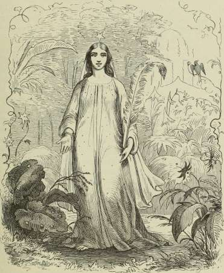
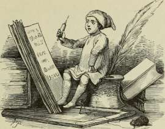
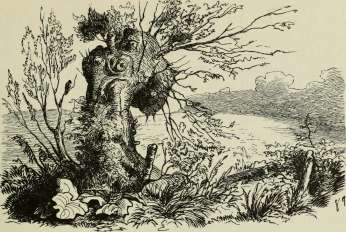
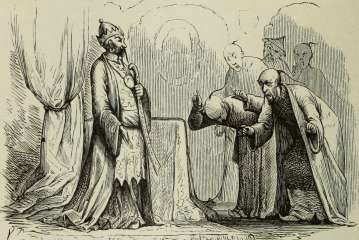
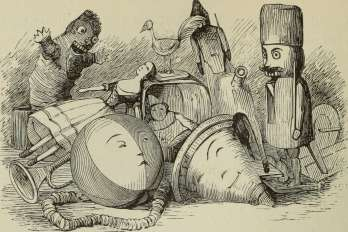
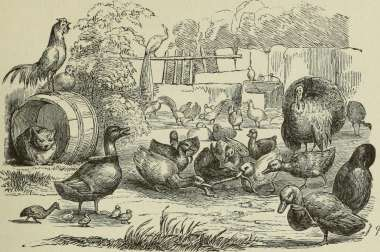
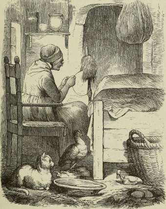
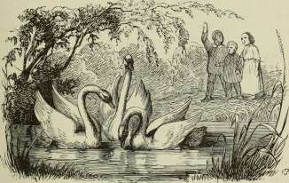
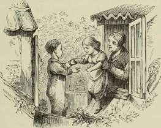

forneden. Ingen Grænse havde den udstrakte Ørken. Da boltrede jeg mig i det fine, løse Sand og hvirvlede det op i store Støtter, det var en Dans! Du skulde have set, hvor forknyt Dromedaren stod, og Købmanden trak Kaftanen over Hovedet. Han kastede sig ned for mig som for Allah, hans Gud. Nu ere de begravede, der staar en Pyramide af Sand over dem alle sammen; naar jeg engang blæser den bort, saa skal Solen blege de hvide Ben, da kan de rejsende se, her før har A^æret Mennesker; ellers kan man ikke tro det i Ørkenen!«
»Du har altsaa kun gjort ondt!« sagde Moderen. »March i Posen!« og før han vidste det, havde hun Søndenvinden om Livet og i Posen, den væltede rundt omkring paa Gulvet, men hun satte sig paa den, og da maatte den ligge stille.
»Det er nogle raske Drenge, Hun har!« sagde Prinsen.
»Ja saamænd,« svarede hun, »og ave dem kan jeg! der har vi den fjerde!«
Det var Østenvinden, han var klædt som en Kineser.
»Naa, kommer du fra den Kant!« sagde Moderen, »jeg troede, du havde været i Paradisets Have.«
»Der flyver jeg først hen i Morgen!« sagde Østenvinden, »i Morgen er det hundrede Aar, siden jeg var der! Jeg kommer nu fra Kina, hvor jeg har danset om Porcelænstaarnet, saa alle Klokkerne klang. Nede paa Gaden fik Embedsmændene Prygl; Bambusrør bleve slidt paa deres Skuldre, og det var Folk fra den første til den niende Grad; de skreg: »Mange Tak, min faderlige Velgører!« men de mente ikke noget med det, og jeg ringede med Klokkerne og sang tsing, tsang, tsu!«
»Du er kaad paa det!« sagde den gamle, »det er godt, du i Morgen kommer til Paradisets Have, det hjælper altid paa din Dannelse! drik saa dygtig af Visdommens Kilde og tag en lille Flaske fuld hjem med til mig!«
»Det skal jeg!« sagde Østenvinden. »Men hvorfor har du nu puttet min Broder fra Sønden ned i Posen, frem med ham! han skal fortælle mig om Fugl Føniks; den Fugl vil Prinsessen i Paradisets Have altid høre om, naar jeg hvert
hundrede Aar gør Visit. Luk Posen op! saa er du min sødeste Moder, og jeg skal forære dig to Lommer fulde af Te, saa grøn og frisk, som jeg har plukket den paa Stedet!«
»Naa, for Teens Skyld, og fordi du er min Kæledægge, vil jeg aabne Posen!« Det gjorde hun, og Søndenvinden krøb ud, men han saa ganske slukøret ud, fordi den fremmede Prins havde set det.
»Der har du et Palmeblad til Prinsessen!« sagde Søndenvinden, »det Blad har den gamle Fugl Føniks, den eneste, der var i Verden, givet mig; han har med sit Næb ridset deri sin hele Levnedsbeskrivelse, de hundrede Aar han levede; nu kan hun selv læse sig det til. Jeg saa, hvor Fugl Føniks selv stak Ild i sin Rede og sad og brændte op som en Hindus Kone. Hvor dog de tørre Grene knagede, der var en Røg og en Duft. Til sidst slog alt op i Lue, den gamle Fugl Føniks blev til Aske, men hans Æg laa gloende rødt i Ilden, det revnede med et stort Knald, og Ungen fløj ud, nu er den Regent over alle Fuglene og den eneste Fugl Føniks i Verden. Han har bidt et Hul i Palmebladet, jeg gav dig, det er hans Hilsen til Prinsessen!«
»Lad os nu faa noget at leve af!« sagde Vindenes Moder, og saa satte de sig alle til at spise af den stegte Hjort, og Prinsen sad ved Siden af Østenvinden, og derfor bleve de snart gode Venner.
»Hør, sig mig engang,« sagde Prinsen, »hvad er det for en Prinsesse, her bliver talt saa meget om, og hvor ligger Paradisets Have?«
»Ho, ho!« sagde Østenvinden, »vil du derhen, ja saa flyv du med mig i Morgen! men det maa jeg ellers sige dig, der har ingen Mennesker været siden Adams og Evas Tid. Dem kender du jo nok fra din Bibelhistorie?«
»Ja vist!« sagde Prinsen.
»Den Gang de bleve forjagne, sank Paradisets Have ned i Jorden, men den beholdt sit varme Solskin, sin milde Luft og al sin Herlighed. Feernes Dronning bor derinde; der ligger Lyksalighedens 0, hvor Døden aldrig kommer, hvor der er dejligt at være! Sæt dig paa min Ryg i Morgen, saa skal jeg
H.C.Andersen: Eventyr og Historier. 12
tage dig med; jeg tænker nok, det lader sig gøre! men nu maa du ikke snakke mere, for jeg vil sove!«
Og saa sov de alle sammen.
I den tidlige Morgenstund vaagnede Prinsen og blev ikke lidt betuttet ved, at han allerede var højt oppe over Skyerne. Han sad paa Ryggen af Østenvinden, der nok saa ærligt holdt paa ham; de vare saa højt i Vejret, at Skove og Marker, Floder og Søer tog sig ud som paa et stort illumineret Landkort.
»God Morgen!« sagde Østenvinden. »Du kunde ellers gerne sove lidt endnu, for der er ikke meget at se paa det flade Land under os Uden du har Lyst til at tælle Kirker! de staa som Kridtbrikker nede paa det grønne Bræt.« Det var Marker og Enge, han kaldte det grønne Bræt.
»Det var uartigt, at jeg ikke fik sagt Farvel til din Moder og dine Brødre!« sagde Prinsen.
»Naar man sover, er man undskyldt!« sagde Østenvinden, og derpaa fløj de endnu raskere af Sted; man kunde høre det paa Toppene af Skovene, naar de foer hen over dem, raslede alle Grene og Blade; man kunde høre det paa Havet og Søerne, thi hvor de fløj, væltede Bølgerne højere, og de store Skibe nejede dybt ned i Vandet som svømmende Svaner.
Mod Aften, da de.t blev mørkt, saa det morsomt ud med de store Byer; Lysene brændte dernede, snart her, snart der: det var ganske, som naar man har brændt et Stykke Papir og ser de mange smaa Ildgnister, hvor de ere Børn og gaa fra Skole. Og Prinsen klappede i Hænderne, men Østenvinden bad ham lade være med det og heller holde sig fast, ellers kunde han let falde ned og blive hængende paa et Kirkespir.
Ørnen i de sorte Skove fløj nok saa let, men Østenvinden fløj lettere. Kosakken paa sin lille Hest jog af Sted over Sletterne, men Prinsen jog anderledes af Sted.
»Nu kan du se Himalaya!« sagde Østenvinden, »det er det højeste Bjerg i Asien; snart skulle vi nu komme til Paradisets Have!« saa drejede de mere sydligt, og snart duftede der af Kiydderier og Blomster. Figen og Granatæbler vokste
vildt, og den vilde Vinranke havde blaa og røde Druer. Helsteg de begge to ned og strakte sig i det bløde Græs, hvor Blomsterne nikkede til Vinden, ligesom de vilde sige: »Velkommen tilbage!«
»Ere vi nu i Paradisets Have?« spurgte Prinsen.
»Nej, vist ikke!« svarede Østenvinden, »men nu skulle vi snart komme der. Ser du Fjeldvæggen der og den store Hule, hvor Vinrankerne hænge, som store, grønne Gardiner. Der skal vi ind igennem! Svøb dig i din Kappe, her brænder Solen, men eet Skridt, og det er isnende koldt. Fuglen, som strejfer forbi Hulen, har den ene Vinge herude i den varme Sommer og den anden derinde i den kolde Vinter!«
»Saa det er Vejen til Paradisets Have?« spurgte Prinsen.
Nu gik de ind 1 Hulen! hu, hvor der var isnende koldt, men det varede dog ikke længe. Østenvinden bredte sine Vinger ud, og de lyste som den klareste Ild; nej, hvilken Hule! de store Stenblokke, som Vandet dryppede fra, hang over dem i de forunderligste Skikkelser; snart var der saa snævert, at de maatte krybe paa Hænder og Fødder, snart saa højt og udstrakt som i den fri Luft. Det saa ud som Gravkapeller med stumme Orgelpiber og forstenede Faner.
»Vi gaa nok Dødens Vej til Paradisets Have!« sagde Prinsen, men Østenvinden svarede ikke et Ord, pegede fremad, og det dejligste blaa Lys straalede dem i Møde. Stenblokkene ovenover bleve mere og mere en Taage, der til sidst var klar som en hvid Sky i Maaneskin. Nu vare de i den dejligste milde Luft, saa frisk som paa Bjergene, saa duftende som ved Dalens Roser.
Der strømmede en Flod, saa klar som Luften selv, og Fiskene vare som Sølv og Guld; purpurrøde Aal, der skød blaa Ildgnister ved hver Bøjning, spillede dernede i Vandet, og de brede Aakandeblade havde Regnbuens Farver, Blomsten selv var en rødgul brændende Lue, som Vandet gav Næring, ligesom Olien faar Lampen bestandig til at brænde; en fast Bro af Marmor, men saa kunstig og fint udhugget, som var den af Kniplinger og Glasperler, førte over Vandet til Lyksalighedens 0, hvor Paradisets Have blomstrede.
12*
Østenvinden tog Prinsen paa sine Arme og bar ham derover. Der sang Blomster og Blade de skønneste Sange fra hans Barndom, men saa svulmende dejligt, som ingen menneskelig Stemme her kan synge.
Var det Palmetræer eller kæmpestore Vandplanter, her groede? saa saftige og store Træer havde Prinsen aldrig før set. I lange Kranse hang der de forunderligste Slyngplanter, som de kun findes afbildede med Farver og Guld paa Randen af de gamle Helgenbøger eller sno sig der gennem Begyndelsesbogstaverne. Det var de sælsomste Sammensætninger af Fugle, Blomster og Snirkler. I Græsset tæt ved stod en Flok Paa-fugle med udbredte, straalende Haler; jo, det var rigtignok saa! nej, da Prinsen rørte ved dem, mærkede han, at det ikke var Dyr, men Planter: det var de store Skræpper, der her straalede som Paafuglens dejlige Hale. Løven og Tigeren sprang lig smidige Katte mellem de grønne Hække, der duftede som Olietræets Blomster, og Løven og Tigeren vare tamme; den vilde Skovdue, skinnende som den skønneste Perle, baskede med sine Vinger Løven paa Manken, og Antilopen, der ellers er saa sky, stod og nikkede med Hovedet, ligesom den ogsaa vilde lege med.
Nu kom Paradisets Fe; hendes Klæder straalede som Solen, og hendes Ansigt var mildt som en glad Moders, naar hun ret er lykkelig over sit Barn. Hun var saa ung og smuk, og de dejligste Piger, hver med en lysende Stjerne i Haaret, fulgte hende.
Østenvinden gav hende det skrevne Blad fra Fugl Føniks, og hendes Øjne funklede af Glæde; hun tog Prinsen ved Haanden og førte ham ind i sit Slot, hvor Væggene havde Farver som det prægtigste Tulipanblad, holdt mod Solen, Loftet selv var een stor, straalende Blomst, og jo mere man stirrede op i den, desto dybere syntes dens Bæger. Prinsen traadte hen til Vinduet og saa igennem en af Ruderne, da saa han Kundskabens Træ med Slangen, og Adam og Eva stod tæt derved. »Ere de ikke forjagne?« spurgte han, og Feen smilede og forklarede ham, at paa hver Rude havde Tiden saaledes brændt sit Billede, men ikke, som man plejede
PARADISETS HAVE.
181
at se det, nej, der var Liv deri, Træernes Blade rørte sig, Menneskene kom og gik som i et Spejlbillede. Og han saa gennem en anden Rude, og der var Jacobs Drøm, hvor Stigen

gik lige ind i Himlen, og Englene med store Vinger svævede op og ned. Ja, alt hvad der var sket i denne Verden levede og rørte sig i Glasruderne; saa kunstige Malerier kunde kun Tiden indbrænde.
Feen smilede og førte ham ind i en Sal, stor og høj; dens Vægge syntes transparente Malerier med det ene Ansigt dejligere
end det andet; det var Millioner lykkelige, der smilede og sang, saa det flød sammen i een Melodi; de allerøverste vare saa smaa, at de syntes mindre end den mindste Rosenknop, naar den tegnes som en Prik paa Papiret. Og midt i Salen stod et stort Træ med hængende, yppige Grene; gyldne Æbler, store og smaa, hang som Appelsiner mellem de grønne Blade. Det var Kundskabens Træ, af hvis Frugt Adam og Eva havde spist. Fra hvert Blad dryppede en skinnende rød Dugdraabe: det var, som om Træet græd blodige Taarer.
»Lad os nu stige iBaaden!« sagde Feen, »der ville vi nyde Forfriskninger ude paa det svulmende Vand! Baaden gynger, kommer dog ikke af Stedet, men alle Verdens Lande glide forbi vore Øjne.« Og det var underligt at se, hvorledes hele Kysten bevægede sig, der kom de høje, snebedækte Alper, med Skyer og sorte Grantræer, Hornet klang saa dybt vemodigt, og Hyrden jodlede smukt i Dalen. Nu bøjede Banantræerne deres lange, hængende Grene ned over Baaden, kulsorte Svaner svømmede paa Vandet, og de sælsomste Dyr og Blomster viste sig paa Strandbredden; det var Ny Holland, den femte Verdensdel, der med en Udsigt til de blaa Bjerge gled forbi. Man hørte Præsternes Sang og saa de vildes Dans til Lyden af Trommer og Ben Tuber. % Ægyptens Pyramider, der ragede ind i Skyerne, omstyrtede Søjler og Sfinkser, halvt begravede i Sandet, sejlede forbi. Nordlysene brændte over Nordens Jøkler, det var et Fyrværkeri, som ingen kunde gøre efter Prinsen var saa lyksalig, ja, han saa jo hundrede Gange mere. end hvad vi her fortælle.
»Og altid kan jeg blive her?« spurgte han.
»Det beror paa dig selv!« svarede Feen. »Dersom du ikke, som Adam, lader dig friste til at gøre det forbudne, da kan du altid blive her!«
»Jeg skal ikke røre Æblerne paa Kundskabens Træ!« sagde Prinsen. »Her er jo tusinde Frugter, skønne som de!«
»Prøv dig selv, og er du ikke stærk nok, saa følg med Østenvinden, som bragte dig; han flyver nu tilbage og kommer her ej i hundrede Aar; den Tid vil paa dette Sted gaa for dig, som var det kun hundrede Timer, men det er en lang Tid for Fristelsen og Synden. Hver Aften, naar jeg gaar fra
dig, maa jeg tilraabe dig: følg med! jeg maa vinke med Haanden ad dig, men bliv tilbage. Gaa ikke med, thi da vil ved hvert Skridt din Længsel blive større: du kommer i Salen, hvor Kundskabens Træ gror; jeg sover under dets duftende, hængende Grene, du vil bøje dig over mig, og jeg maa smile, men trykker du et Kys paa min Mund, da synker Paradiset dybt i Jorden, og det er tabt for dig. Ørkenens skarpe Vind vil omsuse dig, den kolde Regn dryppe fra dit Haar. Sorg og Trængsel bliver din Arvelod.«
»Jeg bliver her!« sagde Prinsen, og Østenvinden kyssede ham paa Panden og sagde: »Vær stærk, saa samles vi her igen om hundrede Aar! Far -vel! far vel!« og Østenvinden bredte sine store Vinger ud; de lyste som Kornmod i Høsten eller Nordlyset i den kolde Vinter. »Far vel! far vel!« klang det fra Blomster og Træer. Storke og Pelikaner fløj i Række som flagrende Baand og fulgte med til Grænsen af Haven.
»Nu begynde vore Danse!« sagde Feen, »ved Slutningen, hvor jeg danser med dig, vil du se, idet Solen synker, at jeg vinker ad dig, du vil høre mig tilraabe dig: følg med, men gør det ikke! i hundrede Aar maa jeg hver Aften gentage det; for hver Gang den Tid er omme, vinder du mere Kraft, til sidst tænker du aldrig derpaa. I Aften er det første Gang; nu har jeg advaret dig!«
Og Feen førte ham ind i en stor Sal af hvide, gennemsigtige Lillier, de gule Støvtraade i hver var en lille Guldharpe, som klang med Strengelyd og Fløjtetoner. De skønneste Piger, svævende og slanke, klædte i bølgende Flor, saa man saa de dejlige Lemmer, svævede i Danse og sang om, hvor herligt det var at leve, at de aldrig vilde dø, og at Paradisets Have skulde evig blomstre.
Og Solen gik ned, den hele Himmel blev eet Guld, der gav Lillierne Skær som den dejligste Rose, og Prinsen drak af den skummende Vin, Pigerne rakte ham, og han følte en Lyksalighed som aldrig før; han saa, hvor Salens Baggrund aabnede sig, og Kundskabens Træ stod i en Glans, der blendede hans Øje; Sangen derfra var blød og dejlig som hans Moders Stemme, og det var, som hun sang: »Mit Barn! mit elskede Barn!«
Da vinkede Feen og raabte saa kærligt: »Følg mig! følg mig!« og han styrtede hen imod hende, glemte sit Løfte, glemte det alt den første Aften, og hun vinkede og smilede. Duften, den krydrede Duft rundt om, blev mere stærk, Harperne tonede langt dejligere, og det var, som de Millioner smilende Hoveder i Salen, hvor Træet groede, nikkede og sang: »Alt bør man kende! Mennesket er Jordens Herre.« Og det var ikke længer blodige Taarer, der faldt fra Bladene paa Kundskabens Træ, det var røde funklende Stjerner syntes ham. »Følg mig, følg mig!« lød de bævende Toner, og ved hvert Skridt brændte Prinsens Kinder hedere, hans Blod bevægede sig stærkere; »jeg maa!« sagde han, »det er jo ingen Synd, kan ikke være det! hvorfor ikke følge Skønhed og Glæde! se hende sove vil jeg! der er jo intet tabt, naar jeg kun lader være at kysse hende, og det gør jeg ikke, jeg er stærk, jeg har en fast Villie!«
Og Feen kastede sin straalende Dragt, bøjede Grenene tilbage, og et Øjeblik efter var hun skjult derinde.
»Jeg har endnu ikke syndet!« sagde Prinsen, »og vil det ikke heller;« og saa drog han Grenene til Side; der sov hun allerede, dejlig, som kun Feen i Paradisets Have kan være det; hun smilede i Drømme, han bøjede sig ned over hende og saa Taarerne bæve mellem hendes Øjenhaar.
»Græder du over mig?« hviskede han, »græd ikke, du dejlige Kvinde! Nu begriber jeg først Paradisets Lykke, den strømmer gennem mit Blod, gennem min Tanke, Kerubens Kraft og evige Liv føler jeg i mit jordiske Legeme, lad det blive evig Nat for mig, et Minut som dette er Rigdom nok!« og han kyssede Taaren af hendes Øje, hans Mund rørte ved hendes. — —
— Da lød der et Tordenskrald, saa dybt og skrækkeligt, som ingen havde hørt det før, og alt styrtede sammen: den dejlige Fe, det blomstrende Paradis sank, det sank saa dybt, saa dybt, Prinsen saa det synke i den sorte Nat; som en lille skinnende Stjerne straalede det langt borte. Dødskulde gik gennem hans Lemmer, han lukkede sit Øje og laa længe som død.
Den kolde Regn faldt paa hans Ansigt, den skarpe Vind blæste om hans Hoved, da vendte hans Tanker tilbage. »Hvad
PARADISETS HAVE.
185
har jeg gjort!« sukkede han, »jeg har syndet som Adam! syndet, saa Paradiset er sunket dybt derned!« og han aabnede sit Øje, Stjernen langt borte, Stjernen, der funklede som det sunkne Paradis, saa han endnu — det var Morgenstjernen paa Himlen.
Han rejste sig op og var i den store Skov nær ved Vindenes Hule, og Vindenes Moder sad ved hans Side, hun saa vred ud og løftede sin Arm i Vejret.
»Allerede den første Aften!« sagde hun, »det tænkte jeg nok! ja, var du min Dreng, saa skulde du nu i Posen!«
»Der skal han komme!« sagde Døden; det var en stærk gammel Mand med en Le i Haanden og med store, sorte Vinger. »I Ligkisten skal han lægges, men ikke nu; jeg mærker ham kun, lad ham da en Stund endnu vandre om i Verden, afsone sin Synd, blive god og bedre! — jeg kommer engang. Naar han da mindst venter det, putter jeg ham i den sorte Ligkiste, sætter den paa mit Hoved og flyver op mod Stjernen; ogsaa der blomstrer Paradisets Have, og er han god og from, da skal han træde derind, men er hans Tanke ond, og Hjertet endnu fuldt af Synd, synker han med Kisten dybere, end Paradiset sank, og kun hvert tusinde Aai henter jeg ham igen, for at han maa synke dybere eller blive paa Stjernen, den funklende Stjerne deroppe.«
Fi-
w^w<
Den flyvende Koffert.
Der var engang en Købmand, han var saa rig, at han kunde brolægge den hele Gade og næsten et lille Stræde til med Sølvpenge; men det gjorde han ikke, han vidste anderledes at bruge sine Penge; gav han en Skilling ud, fik han en Daler igen; saadan en Købmand var han og saa døde han.
Sønnen fik nu alle disse Penge, og han levede lystigt, gik paa Maskerade hver Nat, gjorde Papirsdrager af Rigsdalersedler og slog Smut hen over Søen med Guldpenge i Stedet for med en Sten, saa kunde Pengene sagtens gaa, og det gjorde de; til sidst ejede han ikke mere end fire Skilling og havde ingen andre Klæder end et Par Tøfler og en gammel Slaabrok. Nu brød hans Venner sig ikke længer om ham, da de jo ikke kunde gaa paa Gaden sammen, men een af dem, som var god, sendte ham en gammel Koffert og sagde: »Pak ind!« ja, det var nu meget godt, men han havde ikke noget at pakke ind, saa satte han sig selv i Kofferten.
Det var en løjerlig Koffert. Saa snart man trykkede paa Laasen, kunde Kofferten flyve; det gjorde den, vips fløj den med ham op igennem Skorstenen, højt op over Skyerne, længer
og længer bort; det knagede i Bunden, og han var saa bange for, at den skulde gaa i Stykker, for saa havde han gjort en ganske artig Volte! Gud bevar' os! og saa kom han til Tyrkernes Land. Kofferten skjulte han i Skoven under de visne Blade og gik saa ind i Byen; det kunde han godt gøre, for hos Tyrkerne gik jo alle, ligesom han, i Slaabrok og Tøfler. Saa mødte han en Amme med et lille Barn. »Hør, du Tyrkeamme!« sagde han, »hvad er det for et stort Slot her tæt ved Byen, Vinduerne sidde saa højt!«
»Der bor Kongens Datter!« sagde hun, »der er spaaet hende, at hun skal blive saa ulykkelig over en Kæreste, og derfor maa der ingen komme til hende, uden Kongen og Dronningen er med.«
»Tak!« sagde Købmandssønnen, og saa gik han ud i Skoven, satte sig i sin Koffert, fløj op paa Taget og krøb ind ad Vinduet til Prinsessen.
Hun laa paa Sofaen og sov; hun var saa dejlig, at Købmandssønnen maatte kysse hende; hun vaagnede og blev ganske forskrækket, men han sagde, han var Tyrkeguden, som var kommen ned igennem Luften til hende, og det syntes hun godt om.
Saa sad de ved Siden af hinanden, og han fortalte Historier om hendes Øjne: de vare de dejligste, mørke Søer, og Tankerne svømmede der som Havfruer; og han fortalte om hendes Pande: den var et Snebjerg med de prægtigste Sale og Billeder, og han fortalte om Storken, som bringer de søde, smaa Børn.
Jo, det var nogle dejlige Historier! saa friede han til Prinsessen, og hun sagde straks Ja.
»Men De maa komme her paa Lørdag,« sagde hun, »da er Kongen og Dronningen hos mig til Tevand! de ville være meget stolte af, at jeg faar Tyrkeguden, men se til, De kan et rigtigt dejligt Eventyr, for det holder mine Forældre særdeles meget af; min Moder vil have det moralsk og fornemt og min Fader lystigt, saa man kan le!«
»Ja, jeg bringer ingen anden Brudegave end et Eventyr!« sagde han, og saa skiltes de, men Prinsessen gav ham en
Sabel, der var besat med Guldpenge, og dem kunde han især bruge.
Nu fløj han bort, købte sig en ny Slaabrok og sad saa ude i Skoven og digtede paa et Eventyr; det skulde være færdigt til om Lørdagen, og det er ikke saa let endda.
Saa var han færdig, og saa var det Lørdag.
Kongen, Dronningen og hele Hoffet ventede med Tevand hos Prinsessen. Han blev saa nydeligt modtagen.
»Vil De saa fortælle et Eventyr!« sagde Dronningen, »et, som er dybsindigt og belærende!«
»Men som man dog kan le af!« sagde Kongen.
»Ja nok!« sagde han og fortalte; det maa man nu høre godt efter.
»Der var engang et Bundt Svovlstikker, de vare saa overordentlig stolte paa det, fordi de vare af høj Herkomst; deres Stamtræ, det vil sige, det store Fyrretræ, de hver var en lille Pind af, havde været et stort, gammelt Træ i Skoven. Svovlstikkerne laa nu paa Hylden mellem et Fyrtøj og en gammel Jerngryde, og for dem fortalte de om deres Ungdom. »Ja, da vi vare paa den grønne Gren,« sagde de, »da vare vi rigtignok paa en grøn Gren; hver Morgen og Aften Dia-mantte, det var Duggen, hele Dagen havde vi Solskin, naar Solen skinnede, og alle de smaa Fugle maatte fortælle os Historier. Vi kunde godt mærke, at vi ogsaa vare rige, for Løvtræerne de vare kun klædte paa om Sommeren, men vor Familie havde Raad til grønne Klæder baade Sommer og Vinter. Men saa kom Brændehuggerne, det var den store Revolution, og vor Familie blev splittet ad; Stamherren fik Plads som Stormast paa et prægtigt Skib, der kunde sejle Verden rundt, dersom det vilde; de andre Grene kom andre Steder, og vi have nu det Hverv at tænde Lyset for den nedrige Mængde; derfor ere vi fornemme Folk komne her i Køkkenet.«
»Ja, jeg har det nu paa en anden Maade!« sagde Jerngryden, som Svovlstikkerne laa ved Siden af. »Lige fra jeg kom ud i Verden, er jeg skuret og kogt mange Gange! Jeg sørger for det solide og er egentlig talt den første her i Huset.
Min eneste Glæde er, saadan efter Bordet, at ligge ren og pæn paa Hylden og føre en fornuftig Passiar med Kammeraterne; men naar jeg undtager Vandspanden, som engang imellem kommer ned i Gaarden, saa leve vi altid inden Døre. Vort eneste Nyhedsbud er Torvekurven, men den snakker saa uroligt om Regeringen og Folket; ja, forleden var der en gammel Potte, som af Forskrækkelse derover faldt ned og slog sig i Stykker! den er frisksindet, skal jeg sige Dem!« —
»Nu snakker du for meget!« sagde Fyrtøjet, og Staalet slog til Flintestenen, saa den gnistrede. »Skulle vi nu ikke have en munter Aften?«
»Ja, lad os tale om, hvem der er mest fornemme!« sagde Svovlstikkerne.
»Nej, jeg holder ikke af at tale om mig selv!« sagde Lerpotten, »lad os faa en Aftenunderholdning! jeg vil begynde, jeg skal fortælle saadant noget, enhver har oplevet; det kan man saa rart sætte sig ind i, og det er saa fornøjeligt: »»Ved Østersøen ved de danske Bøge — !««
»Det er en dejlig Begyndelse!« sagde alle Tallerkenerne, »det bliver bestemt en Historie, jeg kan lide!«
»Ja, der tilbragte jeg min Ungdom hos en stille Familie; Møblerne bleve bonede, Gulvet vadsket, der kom rene Gardiner hver fjortende Dag!«
»Hvor De dog fortæller interessant!« sagde Støvekosten. »Man kan straks høre, at det er et Fruentimmer, som fortæller; der gaar saadant noget renligt derigennem!«
»Ja, det føler man!« sagde Vandspanden, og saa gjorde den af Glæde et lille Hop, saa det sagde klask paa Gulvet.
Og Potten blev ved at fortælle, og Enden var lige saa god som Begyndelsen.
Alle Tallerkenerne raslede af Glæde, og Støvekosten tog grøn Persille af Sandhullet og bekransede Potten, for den vidste, det vilde ærgre de andre, og »bekranser jeg hende i Dag,« tænkte den, »saa bekranser hun mig i Morgen.«
»Nu vil jeg danse!« sagde Ildklemmen og dansede; ja, Gud bevar' os, hvor den kunde sætte det ene Ben i Vejret. Det gamle Stolebetræk henne i Krogen revnede ved at se paa
det. »Maa jeg saa blive bekranset!« sagde Ildklemmen, og det blev hun.
»Det er dog kun Pøbel!« tænkte Svovlstikkerne.
Nu skulde Temaskinen synge, men den var forkølet, sagde den, den kunde ikke, uden den var i Kog, men det var af bar Fornemhed; den vilde ikke, uden naar den stod paa Bordet inde hos Herskabet.
Henne i Vinduet sad en gammel Pennefjer, som Pigen plejede at skrive med; der var ikke noget mærkværdigt ved den, uden at den var dyppet alt for dybt i Blækhuset, men deraf var nu den stor paa det. »Vil Temaskinen ikke synge,« sagde den, »saa kan den lade være! udenfor hænger i et Bur en Nattergal, den kan synge, den har rigtignok ikke lært noget, men det vil vi ikke tale ondt om i Aften!«
»Jeg finder det højst upassende,« sagde Tekedlen, der var Køkkensanger og Halvsøster til Temaskinen, »at saadan en fremmed Fugl skal høres! Er det patriotisk? Jeg vil lade Torvekurven dømme!«
»Jeg ærgrer mig kun!« sagde Torvekurven, »jeg ærgrer mig saa inderligt, som nogen kan tænke sig! er det en passende Maade at tilbringe Aftenen paa? vilde det ikke være rigtigere at sætte Huset paa den rette Ende? Enhver skulde da komme paa sin Plads, og jeg vilde styre hele Kodillen. Det vilde blive noget andet!«
»Ja, lad os gøre Spetakel!« sagde de alle sammen. I det samme gik Døren op. Det var Tjenestepigen, og saa stod de stille, ingen sagde et Muk; men der var ikke en Potte, uden at den jo nok vidste, hvad den kunde gøre, og hvor fornem den var; »ja, naar jeg havde villet,« tænkte de, »saa skulde det rigtignok blevet en munter Aften!«
Tjenestepigen tog Svovlstikkerne, gjorde Ild med dem — Gud bevar' os, hvor de spruttede og brændte i Lue.
»Nu kan da enhver,« tænkte de, »se, at vi ere de første! hvilken Glans vi have; hvilket Lys!« — og saa vare de brændt ud.«
»Det var et dejligt Eventyr!« sagde Dronningen, »jeg følte
mig saa ganske i Køkkenet hos Svovlstikkerne, ja, nu skal du have vor Datter.«
»Ja vist!« sagde Kongen, »du skal have vor Datter paa Mandag!« for nu sagde de du til ham, da han skulde være af Familien.
Brylluppet var saaledes bestemt, og Aftenen forud blev hele Byen illumineret; Boller og Kringler fløj i Grams; Gadedrengene stod paa Tæerne, raabte Hurra og peb i Fingrene; det var særdeles pragtfuldt.
»Ja, jeg faar vel ogsaa se til at gøre noget!« tænkte Køb-mandssønnen, og saa købte han Raketter, Knaldperler og alt det Fyrværkeri, der tænkes kunde, lagde det i sin Koffert og fløj med det op i Luften.
Rutsch, hvor det gik! og hvor det futtede.
Alle Tyrkerne hoppede i Vejret ved det, saa deres Tøfler fløj dem om Ørene; saadant et Luftsyn havde de aldrig set før. Nu kunde de da forstaa, at det var Tyrkeguden selv, som skulde have Prinsessen.
Saa snart Købmandssønnen igen med sin Koffert kom ned i Skoven, tænkte han: »Jeg vil dog gaa ind i Byen for at faa at høre, hvorledes det har taget sig ud!« og det var jo ganske rimeligt, han havde Lyst til det.
Nej, hvor dog Folk fortalte! hver evige een, han spurgte derom, havde set det paa sin Maade, men dejligt havde det været for dem alle sammen.
»Jeg saa Tyrkeguden selv,« sagde den ene, »han havde Øjne som skinnende Stjerner og et Skæg som skummende Vande!«
»Han fløj i en Ildkaabe,« sagde en anden. »De dejligste Englebørn tittede frem fra Folderne!«
Jo, det var dejlige Ting, han hørte, og Dagen efter skulde han have Bryllup.
Nu gik han tilbage til Skoven for at sætte sig i sin Koffert — men hvor var den? Kofferten var brændt op. En Gnist fra Fyrværkeriet var bleven tilbage, den havde tændt Ild, og Kofferten var i Aske. Han kunde ikke mere flyve, ikke mere komme til sin Brud.
DEN FLYVENDE KOFFEKT.
Hun stod hele Dagen paa Taget og ventede; hun venter endnu, men han gaar Verden rundt og fortæller Eventyr, men de ere ikke mere saa lystige, som det han fortalte om Svovlstikkerne.
Storkene.
Paa det sidste Hus i en lille By stod der en Storkerede. Storkemoderen sad i Reden hos sine fire smaa Unger, der stak Hovedet frem med det lille sorte Næb, for det var ikke blevet rødt endnu. Et lille Stykke derfra paa Tagryggen stod saa strunk og stiv Storkefaderen, han havde trukket det ene Ben op under sig for dog at have nogen Ulejlighed, idet han stod Skildvagt. Man skulde tro, han var hugget ud af Træ, saa stille stod han. »Det ser vist nok saa fornemt ud, at min Kone har en Skildvagt ved Reden!« tænkte han, »de kan jo ikke vide, at jeg er hendes Mand, de tro vist, jeg er kommanderet til at staa her. Det ser saa rask ud!« og saa blev han ved at staa paa det ene Ben.
Nede paa Gaden legede en hel Flok Børn, og da de saa Storkene, saa sang en af de modigste Drenge, og siden alle sammen, det gamle Vers om Storkene, men de sang det nu, som han kunde huske det:
»Storke, Storke Steje
flyv hjem til dit Eje!
Din Kone ligger i Reden sin
med fire store Unger.
H. C. Andersen: Eventvr og Historier.
Den ene skal hænges, den anden skal stænges, den tredie skal brændes, den fjerde skal endevendes!«
»Hør dog, hvad Drengene synge!« sagde de smaa Storkeunger, »de sige, vi skulle hænges og brændes!«
»Det skulle I ikke bryde eder om!« sagde Storkemoderen; »hør bare ikke efter, saa gør det ikke noget!«
Men Drengene bleve ved at synge, og de pegede Fingre ad Storkene; kun een Dreng, han hed Peter, sagde, at det var Synd at gøre Nar af Dyrene, og vilde slet ikke være med. Storkemoderen trøstede ogsaa sine Unger: »Bryd jer ikke derom,« sagde hun, »se bare, hvor rolig jer Fader staar, og det paa eet Ben!«
»Vi ere saa angest!« sagde Ungerne og trak Hovederne dybt ned i Reden.
Næste Dag, da Børnene kom sammen igen for at lege, og de saa Storkene, begyndte de deres Vise:
»Den ene skal hænges,
den anden skal brændes! —«
»Skulle vi vel hænges og brændes?« spurgte Storkeungerne.
»Nej vist ikke!« sagde Moderen, »I skulle lære at flyve, jeg skal nok eksercere jer! saa tage vi ud paa Engen og gøre Visit hos Frøerne, de neje i Vandet for os, de synge »koaks, koaks!« og saa spise vi dem op, det kan rigtig blive en Fornøjelse!«
»Og hvad saa?« spurgte Storkeungerne.
»Saa samles alle de Storke, her ere i hele Landet, og saa begynder Høstmanøvren; da maa man flyve godt, det er af stor Vigtighed, thi den, som ikke kan flyve, stikker Generalen ihjel med sit Næb; derfor pas vel paa at lære noget, naar Eksercitsen begynder!«
»Saa blive vi jo dog stængede, som Drengene sagde, og hør, nu sige de det igen!«
»Hør paa mig og ikke paa dem,« sagde Storkemoderen. »Efter den store Manøvre flyve vi til de varme Lande, oh, saa langt herfra, over Bjerge og Skove. Til Ægypten flyve vi, hvor der er trekantede Stenhuse, der gaa i en Spids op over Skyerne, de kaldes Pyramider og ere ældre, end nogen Stork kan tænke sig. Der er en Flod, som løber over, saa Landet bliver til Mudder. Man gaar i Mudder og spiser Frøer.«
»Oh!« sagde alle Ungerne.
»Ja! der er saa dejligt! man gør ikke andet end spise hele Dagen, og imedens vi har det saa godt, er i dette Land ikke et grønt Blad paa Træerne; her er saa koldt, saa Skyerne fryse i Stykker og falde ned i smaa, hvide Lapper!« det var Sneen, hun mente, men hun kunde jo ikke forklare det tydeligere.
»Fryse saa ogsaa de uartige Drenge i Stykker?« spurgte Storkeungerne.
»Nej, i Stykker fryse de ikke! men de ere nær ved det og maa sidde inde i den mørke Stue og kukkelure; I kunne derimod flyve om i fremmed Land, hvor der er Blomster og varmt Solskin!«
Nu var der allerede gaaet nogen Tid, og Ungerne vare saa store, at de kunde staa op i Reden og se vidt omkring, og Storkefaderen kom flyvende hver Dag med pæne Frøer, smaa Snoge og alt det Storkeslikkeri, han kunde finde; oh, det saa morsomt ud, hvor han gjorde Kunster for dem. Hovedet lagde han lige om paa Halen, Næbbet knebrede han med, som var det en lille Skralde, og saa fortalte han dem Historier, alle sammen fra Sumpen.
»Hør, nu maa I lære at flyve!« sagde en Dag Storkemoderen, og saa maatte alle fire Unger ud paa Tagryggen; oh, hvor de dinglede! hvor de balancerede med Vingerne og vare dog nær ved at falde ned!
»Se nu paa mig!« sagde Moderen, »saaledes skulle I holde Hovedet! saaledes skulle I sætte Benene! een, to! een to! det er det, som skal hjælpe jer frem i Verden!« saa fløj hun et lille Stykke, og Ungerne, de gjorde et lille kluntet Hop, bums! der laa de, for de vare tunge i Livet. ■
13*
»Jeg vil ikke flyve!« sagde den ene Unge og krøb ned i Reden igen, »jeg bryder mig ikke om at komme til de varme Lande!«
»Vil du da fryse ihjel her, naar det bliver Vinter? skulle Drengene komme og hænge og brænde og stege dig? nu kalder jeg paa dem!«
»O nej!« sagde Storkeungen, og saa hoppede den igen paa Taget ligesom de andre; den tredie Dag kunde de ordentlig flyve lidt, og saa troede de, at de kunde ogsaa sidde og hvile paa Luften; det vilde de, men bums! der dumpede de; saa maatte de til at røre Vingerne igen. Nu kom Drengene nede paa Gaden og sang deres Vise:
»Storke, Storke Steje!«
»Skulle vi flyve ned og hugge deres Øjne ud?« sagde Ungerne.
»Nej, lad være med det!« sagde Moderen, »hør bare efter mig, det er meget vigtigere! een, to, tre! nu flyve vi højre om! een, to, tre! nu venstre om Skorstenen! — se, det var meget godt! det sidste Slag med Vingerne var saa nydeligt og rigtigt, at I skulle faa Lov at komme i Sumpen med mig i Morgen! der komme flere nette Storkefamilier med deres Børn, lad mig nu se, at mine ere de pæneste, og saa at I knejse, det ser godt ud, og det giver Anseelse!«
»Men skulle vi da ikke have Hævn over de uartige Drenge?« spurgte Storkeungerne.
»Lad dem skrige hvad de ville! I flyve dog med Skyerne, komme til Pyramidernes Land, naar de maa fryse og ikke have et grønt Blad eller et sødt Æble.«
»Ja, hævnes ville vi!« hviskede de til hverandre, og saa blev der igen ekserceret.
Af alle Drengene paa Gaden var ingen værre til at synge Spottevisen end just han, som havde begyndt, og det var en ganske lille en, han var nok ikke mere end seks Aar; Storkeungerne troede rigtignok, at han var hundrede Aar, for han var jo saa meget større end deres Moder og Fader, og hvad vidste de om, hvor gamle Børn og store Mennesker kunne
være. Hele deres Hævn skulde gaa ud over den Dreng, han havde jo først begyndt, og han blev altid ved. Storkeungerne vare saa irriterede, og alt som de bleve større, vilde de mindre taale det; Moderen maatte til sidst love dem, at de nok skulde faa Hævn, men hun vilde ikke tage den før paa den sidste Dag, de vare der i Landet.
»Vi maa jo først se, hvorledes I bærer jer ad ved den store Manøvre! komme I galt fra det, saa Generalen jager jer Næbbet i Brystet, saa have jo Drengene dog Ret, i det mindste paa en Maade! lad os nu se!«
»Ja, det skal du!« sagde Ungerne, og saa gjorde de sig just Umage! de øvede sig hver Dag og fløj saa nydeligt og let, saa det var en Lyst.
Nu kom Høsten; alle Storkene begyndte at samles for at flyve bort til de varme Lande, medens vi have Vinter. Det var en Manøvre! over Skove og Byer maatte de, bare for at se, hvor godt de kunde flyve, det var jo en slor Rejse, som forestod. Storkeungerne gjorde deres Ting saa nydeligt, at de fik udmærket godt med Frø og Slange. Det var den allerbedste Karakter, og Frøen og Slangen kunde de spise, det gjorde de ogsaa.
»Nu skulle vi hævnes!« sagde de.
»Ja vist!« sagde Storkemoderen. »Hvad jeg har udtænkt, det er just det rigtige! jeg veed, hvor den Dam er, hvor alle de smaa Menneskebørn ligge, til Storken kommer og henter dem til Forældrene. De nydelige smaa Børn sove og drømme saa dejligt, som de aldrig siden komme til at drømme. Alle Forældre ville gerne have saadant et lille Barn, og alle Børn ville have en Søster eller Broder. Nu ville vi flyve hen til Dammen, hente een til hver af de Børn, som ikke have sunget den onde Vise og gjort Nar af Storkene, for de Børn skulle slet ingen have!«
»Men han, som begyndte med at synge, den slemme, hæslige Dreng!« skreg de unge Storke, »hvad gøre vi ved ham?«
»Der ligger i Dammen et lille dødt Barn, det har drømt sig ihjel, det ville vi tage til ham, saa maa han græde, fordi
STORKENE.
vi have bragt ham en død lille Broder; men den gode Dreng, ham har I dog ikke glemt, han, som sagde: »Det er Synd at gøre Nar af Dyrene!« ham ville vi bringe baade en Broder og en Søster, og da den Dreng hed Peter, saa skulle I ogsaa alle sammen kaldes Peter!«
Og det skete hvad hun sagde, og saa hed alle Storkene Peter, og det kaldes de endnu.
Ole Lukøje.
I hele Verden er der ingen, der kan saa mange Historier, som Ole Lukøje! — han kan rigtignok fortælle!
Saadan ud paa Aftenen, naar Børn sidde nok saa net ved Bordet eller paa deres Skammel, kommer Ole Lukøje; han kommer saa stille op ad Trappen, for han gaar paa Hosesokker, han lukker ganske sagte Døren op, og fut! saa sprøjter han Børnene sød Mælk ind i Øjnene, saa fint, saa fint, men dog altid nok til, at de ikke kunne holde Øjnene aabne, og derfor ikke se ham; han lister sig lige bag ved, blæser dem sagte i Nakken, og saa blive de tunge i Hovedet, o ja! men det gør ikke ondt, for Ole Lukøje mener det just godt med Børnene; han vil bare have, at de skulle være rolige, og det ere de bedst, naar man faar dem i Seng; de skulle være stille, for at han kan fortælle dem Historier. —
Naar Børnene nu sove, sætter Ole Lukøje sig paa Sengen; han er godt klædt paa, hans Frakke er af Silketøj, men det er ikke muligt at sige, hvad Kulør den har, for den skinner grøn, rød og blaa, alt ligesom han drejer sig; under hver Arm holder han en Paraply, een med Billeder paa, og
den sætter han over de gode Børn, og saa drømme de hele Natten de dejligste Historier, og een Paraply har han, hvor der slet intet er paa, og den sætter han over de uartige Børn, saa sove de saa tosset og har om Morgenen, naar de vaagne, ikke drømt det allermindste.
Nu skulle vi høre, hvorledes Ole Lukøje i en hel Uge kom hver Aften til en lille Dreng, som hed Hjalmar, og hvad han fortalte ham! Det er hele syv Historier, for der er syv Dage i en Uge.

tjør nu engang!«
Mandag.
sagde Ole Lukøje om Aftenen, da han havde faaet Hjalmar i Seng, »nu skal jeg pynte op!« og saa bleve alle Blomsterne i Urtepotterne til store Træer, der strakte deres lange Grene hen under Loftet og langs med Væggen, saa hele Stuen saa ud som det dejligste Lysthus, og alle Grenene vare fulde af Blomster, og hver Blomst var smukkere end en Rose, lugtede saa dejlig, og vilde man spise den, var den sødere end Syltetøj. Frugterne glinsede ligesom Guld, og saa var der Boller, der revnede af Rosiner, det var mageløst! men i det samme begyndte det at jamre sig saa forskrækkeligt henne i Bordskuffen, hvor Hjalmars Skolebøger laa.
»Hvad er nu det!« sagde Ole Lukøje og gik hen til Bordet og fik Skuffen op. Det var Tavlen, som det knugede og trykkede i, for der var kommet et galt Tal i Regnestykket, saa det var færdigt at falde fra hinanden; Griffelen hoppede og sprang i sit Sejlgarnsbaand, ligesom den kunde være en lille Hund, den vilde hjælpe paa Regnestykket, men den kunde ikke! — Og saa var det Hjalmars Skrivebog, som det jamrede sig indeni, oh, det var ordentligt fælt at høre! langs ned paa hvert Blad stod alle de store Bogstaver, hvert
med et lille ved Siden, en hel Række ned ad, det var saadan en Forskrift, og ved den igen stod nogle Bogstaver, der troede, de saa ud ligesom den, for dem havde Hjalmar skrevet, de laa næsten, ligesom om de vare faldne over Blyantsstregen, hvilken de skulde staa paa.
»Se, saaledes skulle I holde eder!« sagde Forskriften, »se, saaledes til Siden, med et rask Sving!«
»Oh, vi ville gerne,« sagde Hjalmars Bogstaver, »men vi kunne ikke, vi ere saa daarlige!«
»Saa skal I have Kinderpulver!« sagde Ole Lukøje.
»O nej!« raahte de, og saa stod de saa ranke, at det var en Lyst.
»Ja, nu faa vi ikke fortalt Historier!« sagde Ole Lukøje, »nu maa jeg eksercere dem! een to! een to!« og saa eksercerede han Bogstaverne, og de stod saa ranke og saa sunde, som nogen Forskrift kunde staa; men da Ole Lukøje gik, og Hjalmar om Morgenen saa til dem, saa vare de lige saa elendige som før.
Tirsdag.
Saa snart Hjalmar var i Seng, rørte Ole Lukøje med sin lille Troldsprøjte ved alle Møblerne i Stuen, og straks begyndte de at snakke, og alle sammen snakkede de om sig selv, undtagen Spyttebakken, der stod tavs og ærgrede sig over, at de kunde være saa forfængelige kun at tale om sig selv, kun at tænke paa sig selv og slet ikke at have Tanke for den, der dog stod saa beskeden i Krogen og lod sig spytte paa.
Der hang over Kommoden et stort Maleri i en forgyldt Ramme; det var et Landskab, man saa høje, gamle Træer, Blomster i Græsset og et stort Vand med en Flod, der løb om bag Skoven, forbi mange Slotte, langt ud i det vilde Hav.
Ole Lukøje rørte med sin Troldsprøjte ved Maleriet, og saa begyndte Fuglene derinde at synge, Træernes Grene bevægede sig, og Skyerne tog ordentlig Flugt, man kunde se deres Skygge hen over Landskabet.
Nu løftede Ole Lukøje den lille Hjalmar op mod Rammen, og Hjalmar stak Benene ind i Maleriet, lige ind i det høje Græs, og der stod han; Solen skinnede mellem Træernes Grene ned paa ham. Han løb hen til Vandet, satte sig i en lille Baad, der laa; den var malet rød og hvid, Sejlene skinnede som Sølv, og seks Svaner, alle med Guldkroner nede om Halsen og en straalende blaa Stjerne paa Hovedet, trak Baaden forbi de grønne Skove, hvor Træerne
fortalte om Røvere og Hekse, og Blomsterne om de nydelige smaa Alfer, og hvad Sommerfuglene havde fortalt dem.
De dejligste Fisk, med Skæl som Sølv og Guld, svømmede efter Baaden; imellem gjorde de et Spring, saa det sagde Plask igen i Vandet, og Fuglene, røde og blaa, smaa og store, fløj i to lange Rækker bag efter, Myggene dansede, og Oldenborren sagde bum, bum; de vilde alle sammen følge Hjalmar, og hver havde de en Historie at fortælle.
Det var rigtignok en Sejltur! snart vare Skovene saa tætte og saa mørke, snart vare de som den dejligste Have med Solskin og Blomster, og der laa store Slotte af Glas og af Marmor; paa Altanerne stod Prinsesser, og alle vare de smaa Piger, som Hjalmar godt kendte, han havde leget med dem før. De rakte Haanden ud, og hver holdt den yndigste Sukkergris, som nogen Kagekone kunde sælge, og Hjalmar tog i den ene Ende af Sukkergrisen, idet han sejlede forbi, og Prinsessen holdt godt fast, og saa fik hver sit Stykke, hun det mindste, Hjalmar det allerstørste! Ved hvert Slot stod smaa Prinser Skildvagt, de skuldrede med Guldsabel og lod det regne med Rosiner og Tinsoldater; det var rigtige Prinser.
Snart sejlede Hjalmar igennem Skove, snart ligesom igennem store Sale eller midt igennem en By; han kom ogsaa igennem den, hvor hans Barnepige boede, hun, der havde baaret ham, da han var en ganske lille Dreng, og havde holdt saa meget af ham, og hun nikkede og vinkede og sang det nydelige Vers, hun selv havde digtet og sendt Hjalmar:
Jeg tænker paa dig saa mangen Stund,
min egen Hjalmar, du søde!
Jeg har jo kysset din lille Mund,
din Pande, de Kinder røde.
Jeg hørte dig sige de første Ord,
jeg maatte dig Afsked sige.
Vor Herre velsigne dig her paa Jord,
en Engel du er fra hans Rige!
Og alle Fuglene sang med, Blomsterne dansede paa Stilken, og de gamle Træer nikkede, ligesom om Ole Lukøje ogsaa fortalte dem Historier.
Onsdag.
Nej, hvor Regnen skyllede ned udenfor! Hjalmar kunde høre det i Søvne, og da Ole Lukøje lukkede et Vindue op, stod Vandet lige op til Vindueskarmen; der var en hel Sø derude, men det prægtigste Skib laa op til Huset.
»Vil du sejle med? lille Hjalmar!« sagde Ole Lukøje, »saa kan du i Nat komme til de fremmede Lande og være her i Morgen igen!«
Og saa stod med eet Hjalmar i sine Søndagsklæder midt paa det prægtige Skib, og straks blev Vejret velsignet, og de sejlede gennem Gaderne, krydsede om Kirken, og nu var alt en stor, vild Sø. De sejlede saa længe, at der intet Land var at øjne mere, og de saa en Flok Storke, de kom ogsaa hjemme fra og vilde til de varme Lande; den ene Stork fløj bag ved den anden, og de havde allerede fløjet saa langt, saa langt; een af dem var saa træt, at hans Vinger næsten ikke kunde bære ham længer, han var den allersidste i Rækken, og snart kom han et stort Stykke bag efter, til sidst sank han med udbredte Vinger lavere og lavere, lian gjorde endnu et Par Slag med Vingerne, men det hjalp ikke; nu berørte han med sine Fødder Tovværket paa Skibet, nu gled han ned ad Sejlet og bums! der stod han paa Dækket.
Saa tog Matrosdrengen ham og satte ham ind i Hønsehuset til Høns, Ænder og Kalkuner; den stakkels Stork stod ganske forknyt midt imellem dem.
»S'ikken en!« sagde alle Hønsene.
Og den kalkunske Hane pustede sig op, saa tyk den kunde, og spurgte, hvem han var; og Ænderne gik baglængs og puffede til hverandre: »Rap dig! rap dig!«
Og Storken fortalte om det varme Afrika, om Pyramiderne og om Strudsen, der løb som en vild Hest hen over Ørkenen, men Ænderne forstod ikke, hvad han sagde, og saa puffede de til hverandre: »Skulle vi være enige om, at han er dum?«
»Ja vist er han dum!« sagde den kalkunske Hane, og saa pludrede den op. Da tav Storken ganske stille og tænkte paa sit Afrika.
»Det er nogle dejlige tynde Ben, I har!« sagde Kalkunen. »Hvad koster Alen?«
»Skrat, skrat, skrat!« grinte alle Ænderne, men Storken lod, som om han slet ikke hørte det.
»I kan gerne le med!« sagde Kalkunen til ham, »for det var meget vittigt sagt! eller var det maaske for lavt for ham, ak, ak! han er ikke flersidig! lad os blive ved at være interessante for os selv!« og saa klukkede Hønsene, og Ænderne snadrede: »Gik, gak! gik, gak!« det var skrækkeligt, hvor morsomt de selv fandt det.
Men Hjalmar gik hen til Hønsehuset, aabnede Døren, kaldte paa Storken, og den hoppede ud paa Dækket til ham; nu havde den hvilet sig, og det var, ligesom om den nikkede til Hjalmar for at takke ham; derpaa bredte den sine Vinger ud og fløj til de varme Lande, men Hønsene klukkede, Ænderne snadrede, og den kalkunske Hane blev ganske ildrød i Hovedet.
»I Morgen skulle vi koge Suppe paa jer!« sagde Hjalmar, og saa vaagnede han og laa i sin lille Seng. Det var dog en forunderlig Rejse, Ole Lukøje havde ladet ham gøre den Nat.
Torsdag.
Veed du hvad!« sagde Ole Lukøje, »bliv nu ikke bangef her skal du se en lille Mus!« og saa holdt han sin Haand, med det lette, nydelige Dyr, hen imod ham. »Den er kommen for at invitere dig til Bryllup. Her er to smaa Mus, som i Nat ville træde ind i Ægtestanden. De bo nede under din Moders Spisekammergulv, det skal være saadan en dejlig. Lejlighed!«
»Men hvor kan jeg komme gennem det lille Musehul i Gulvet?« spurgte Hjalmar.
»Lad mig om det!« sagde Ole Lukøje, »jeg skal nok faa dig lille!« og saa rørte han med sin Troldsprøjte ved Hjalmar, der straks blev mindre og mindre, til sidst var han ikke saa stor som en Finger. »Nu kan du laane Tinsoldatens Klæder, jeg tænker, de kunne passe, og det ser saa rask ud at have Uniform paa, naar man er i Selskab!«
»Ja nok!« sagde Hjalmar, og saa var han i Øjeblikket klædt paa som den nysseligste Tinsoldat.
»Vil De ikke være saa god at sætte Dem i Deres Moders Fingerbøl,« sagde den lille Mus, »saa skal jeg have den Ære at trække Dem!«
»Gud, skal Frøkenen selv have Ulejlighed!« sagde Hjalmar, og saa kørte de til Musebryllup.
Først kom de ind under Gulvet i en lang Gang, der slet ikke var højere, end at de netop kunde køre der med et Fingerbøl, og hele Gangen var illumineret med Trøske.
»Lugter her ikke dejligt?« sagde Musen, som trak ham, »den hele Gang er bleven smurt med Flæskesvær! det kan ikke være dejligere!«
Nu kom de ind i Brudesalen; her stod til højre alle de smaa Hunmus, og de hviskede og tiskede, ligesom om de gjorde Nar af hinanden; til venstre stod alle Hanmusene og strøg sig med Poten om Mundskægget, men midt paa Gulvet saa man Brudeparret; de stod i en udhulet Osteskorpe og kyssedes saa skrækkeligt meget for alles Øjne, thi de vare jo forlovede, og nu skulde de straks have Bryllup.
Der kom altid flere og flere fremmede; den ene Mus var færdig at træde den anden ihjel, og Brudeparret havde stillet sig midt i Døren, saa man hverken kunde komme ud eller ind. Hele Stuen var ligesom Gangen smurt med Flæskesvær, det var hele Beværtningen, men til Dessert blev der fremvist en Ært, som en lille Mus af Familien havde bidt Brudeparrets Navn ind i, det vil sige det første Bogstav; men det var noget ganske overordentligt.
Alle Musene sagde, at det var et dejligt Bryllup, og at Konversationen havde været saa god.
Og saa kørte Hjalmar igen hjem; han havde rigtignok været i fornemt Selskab, men han maatte ogsaa krybe ordentlig sammen, gøre sig lille og komme i Tinsoldatuniform.

Fredag.
Det er utroligt, hvor mange der er af ældre Folk, som gerne ville have fat paa mig!« sagde Ole Lukøje, »det er især dem, som have gjort noget ondt. »»Gode, lille Ole,«« sige de til mig, »»vi kunne ikke faa Øjnene i, og saa ligge vi hele Natten og se alle vore onde Gerninger, der, som fæle smaa Trolde, sidde paa Sengekanten og sprøjte os over med hedt Vand; vilde du dog komme og jage dem bort, at vi kunne faa en god Søvn,«« og saa sukke de saa dybt: »»Vi ville saamænd gerne betale; god Nat, Ole! Pengene ligge i Vinduet!«« men jeg gør det ikke for Penge,« sagde Ole Lukøje.
»Hvad skulle vi nu have for i Nat?« spurgte Hjalmar.
»Ja, jeg veed ikke, om du har Lyst igen i Nat at komme til Bryllup, det er et andet Slags end det i Gaar. Din Søsters store Dukke, den, der ser ud som et Mandfolk og kaldes Herman, skal giftes med Dukken Bertha, det er desuden Dukkens Fødselsdag, og derfor skal der komme saa mange Foræringer.«
»Ja, det kender jeg nok!« sagde Hjalmar, »altid naar Dukkerne trænge til ny Klæder, saa lader min Søster dem
have Fødselsdag eller holde Bryllup! det er vist sket hundrede Gange!«
»Ja, men i Nat er Brylluppet hundrede og eet, og naar hundrede og eet er ude, saa er alt forbi! derfor bliver ogsaa dette saa mageløst. Se engang!«
Og Hjalmar saa hen paa Bordet; der stod det lille Paphus med Lys i Vinduerne, og alle Tinsoldaterne præsenterede Gevær udenfor. Brudeparret sad paa Gulvet og lænede sig op til Bordbenet, ganske tankefuldt, og det kunde det jo have Grund til. Men Ole Lukøje, iført Bedstemoders sorte Skørt, viede dem; da Vielsen var forbi, istemte alle Møblerne i Stuen følgende skønne Sang, der var skrevet af Blyanten; den gik paa Melodi som Tappenstregen:
Vor Sang skal komme som en Vind til Brudeparret i Stuen ind; de knejse begge som en Pind, de ere gjort' af Handskeskind! :;: Hurra, Hurra! for Pind og Skind! Det synge vi højt i Vejr og Vind! :;:
Og nu fik de Foræringer, men de havde frabedet sig alle spiselige Ting, for de havde nok af deres Kærlighed.
»Skulle vi nu ligge paa Landet eller rejse udenlands?« spurgte Brudgommen, og saa blev Svalen, som havde rejst meget, og den gamle Gaardhøne, der fem Gange havde ruget Kyllinger ud, taget paa Raad; og Svalen fortalte om de dejlige varme Lande, hvor Vindruerne hang saa store og tunge, hvor Luften var saa mild, og Bjergene havde Farver, som man her slet ikke kender dem.
»De har dog ikke vor Grønkaal!« sagde Hønen. »Jeg laa en Sommer med alle mine Kyllinger paa Landet; der var en Grusgrav, som vi kunde gaa og skrabe i, og saa havde vi Adgang til en Have med Grønkaal! Oh, hvor den var grøn! jeg kan ikke tænke mig noget kønnere.«
»Men den ene Kaalstok ser ud ligesom den anden,« sagde Svalen, »og saa er her tit saa daarligt Vejr!«
»Ja, det er man vant til!« sagde Hønen.
»Men her er koldt, det fryser!«
»Det har Kaalen godt af!« sagde Hønen. »Desuden kunne vi ogsaa have det varmt! havde vi ikke for fire Aar siden en Sommer, der varede i fem Uger, her var saa hedt, man kunde ikke trække Vejret! og saa have vi ikke alle de giftige Dyr, de have ude! og vi ere fri for Røvere! Det er et Skarn, som ikke finder, at vort Land er det kønneste! han fortjente rigtig ikke at være her!« og saa græd Hønen. »Jeg har ogsaa rejst! jeg har kørt i en Bøtte over tolv Mil! der er slet ingen Fornøjelse ved at rejse!«
»Ja, Hønen er en fornuftig Kone!« sagde Dukken Bertha, »jeg holder heller ikke af at rejse paa Bjerge, for det er kun op, og saa er det ned! nej, vi ville flytte ud ved Grusgraven og spadsere i Kaalhaven.«
Og derved blev det.
ir
Lørdag.
Faar jeg nu Historier?« sagde den lille Hjalmar, saa snart Ole Lukøje havde faaet ham i Seng.
»I Aften har vi ikke Tid til det,« sagde Ole og spændte sin smukkeste Paraply over ham. »Se nu paa disse Kinesere!« og hele Paraplyen saa ud som en stor kinesisk Skaal med blaa Træer og spidse Broer med smaa Kinesere paa, der stod og nikkede med Hovedet. »Vi skulle have hele Verden pudset kønt op til i Morgen,« sagde Ole, »det er jo da en hellig Dag, det er Søndag. Jeg skal hen i Kirketaarnet for at se, om de smaa Kirkenisser polere Klokkerne, at de kunne lyde smukt; jeg skal ud paa Marken og se, om Vindene blæse Støvet af Græs og Blade, og hvad der er det største Arbejde, jeg skal have alle Stjernerne ned for at polere dem; jeg tager dem i mit Forklæde, men først maa hver nummereres, og Hullerne, hvor de sidde deroppe, maa nummereres, at de kunne komme paa deres rette Pladser igen, ellers vilde de ikke sidde fast, og vi faa for mange Stjerneskud, idet den ene dratter efter den anden!«
»Hør, veed De hvad, Hr. Lukøje!« sagde et gammelt Portræt, der hang paa Væggen, hvor Hjalmar sov, »jeg er Hjalmars Oldefader; De skal have Tak, fordi De fortæller Drengen Historier, men De maa ikke forvilde hans Begreber.
Stjernerne kunne ikke tages ned og poleres! Stjernerne ere Kloder ligesom vor Jord, og det er just det gode ved dem!«
»Tak skal du have, du gamle Oldefader!« sagde Ole Lukøje, »Tak skal du have! Du er jo Hovedet for Familien, du er »Olde«-Hovedet! men jeg er ældre end du! jeg er en gammel Hedning; Romerne og Grækerne kalde mig Drømme-guden! jeg er kommen i de fornemste Huse og kommer der endnu! jeg forstaar at omgaas baade med smaa og store! Nu kan du fortælle!« — og saa gik Ole Lukøje og tog Paraplyen med.
»Nu tør man nok ikke mere sige sin Mening!« sagde det gamle Portræt.
Og saa vaagnede Hjalmar.
GOD å spr
Søndag.
od Aften!« sagde Ole Lukøje, og Hjalmar nikkede, men sprang saa hen og vendte Oldefaderens Portræt om mod Væggen, at det ikke skulde snakke med ligesom i Gaar.
»Nu skal du fortælle mig Historier; om »de fem grønne Ærter, der boede i een Ærtebælg«, og om »Haneben, der gjorde Kur til Høneben«, og om »Stoppenaalen, der var saa fin paa det, at hun bildte sig ind, hun var en Synaal«!«
»Man kan ogsaa faa for meget af det gode!« sagde Ole Lukøje; »jeg vil helst vise dig noget, veed du nok! jeg vil vise dig min Broder, han hedder ogsaa Ole Lukøje, men han kommer aldrig til nogen mer end een Gang, og naar han kommer, tager han dem med paa sin Hest og fortæller dem Historier! han kan kun to; een, der er saa mageløs dejlig, at ingen i Verden kan tænke sig den, og een, der er saa fæl og gruelig — ja, det er ikke til at beskrive!« og saa løftede Ole Lukøje den lille Hjalmar op i Vinduet og sagde: »Der skal du se min Broder, den anden Ole Lukøje! de kalde ham ogsaa Døden; ser du, han ser slet ikke slem ud, som i Billedbøgerne, hvor han er Ben og Knogler! nej, det er Sølvbroderi, han har paa Kjolen: det
OLE LUKØJE.
215
er den dejligste Husaruniform! en Kappe af sort Fløjl flyver bag ud over Hesten! se, hvor han rider i Galop.«
Og Hjalmar saa, hvorledes den Ole Lukøje red af Sted og tog baade unge og gamle Folk op paa Hesten; nogle satte han for paa, og andre satte han bag paa, men altid spurgte han først: »Hvorledes staar det med Karakterbogen?« — »Godt!« sagde de alle sammen; »ja, lad mig selv se!« sagde han, og saa maatte de vise ham Bogen, og alle de, som havde »Meget godt« og »Udmærket godt«, kom for paa Hesten og fik den dejlige Historie at høre, men de, som havde »Temmelig godt« og »Maadeligt«, de maatte bag paa og fik den fæle Historie; de rystede og græd, de vilde springe af Hesten, men de kunde det slet ikke, thi de vare lige straks voksede fast til den.
»Men Døden er jo den dejligste Ole Lukøje!« sagde Hjalmar, »ham er jeg ikke bange for!«
»Det skal du heller ikke være!« sagde Ole Lukøje, »se bare til, at du har en god Karakterbog!«
»Ja, det er lærerigt!« mumlede Oldefaderens Portræt, »det hjælper dog, man siger sin Mening!« og saa var han fornøjet.
Se, det er Historien om Ole Lukøje! nu kan han selv i Aften fortælle dig noget mere.
/.*
€V
Svinedrengen.
Der var engang en fattig Prins; han havde et Kongerige, der var ganske lille, men det var da altid stort nok til at gifte sig paa, og gifte sig det vilde han.
Nu var det jo rigtignok noget kækt af ham, at han turde sige til Kejserens Datter: »Vil du ha'e mig?« men det turde han nok, for hans Navn var vidt og bredt berømt; der var hundrede Prinsesser, som vilde have sagt Tak til, men se, om hun gjorde det.
Nu skulle vi høre:
Paa Prinsens Faders Grav vokste der et Rosentræ, oh, saadant et dejligt Rosentræ! det bar kun hvert femte Aar Blomst, og det kun en eneste, men det var en Rose, der duftede saa sødt, at man ved at lugte til den glemte alle sine Sorger og Bekymringer; og saa havde han en Nattergal, der kunde synge, som om alle dejlige Melodier sad i dens lille Strube. Den Rose og den Nattergal skulde Prinsessen have; og derfor kom de begge to i store Sølvfoderaler og blev saa sendt til hende.
Kejseren lod dem bære foran sig ind i den store Sal,
hvor Prinsessen gik og legede »komme fremmede« med sine Hofdamer; de bestilte ikke andet; og da hun saa de store Foderaler med Foræringerne i, klappede hun i Hænderne af Glæde.
»Bare det var en lille Missekat!« sagde hun, — men saa kom den dejlige Rose.
»Nej, hvor den er nydelig gjort!« sagde alle Hofdamerne.
»Den er mere end nydelig!« sagde Kejseren, »den er pæn!«
Men Prinsessen følte paa den, og saa var hun færdig at græde.
»Fy Papa!« sagde hun, »den er ikke kunstig, den er virkelig!«
»Fy!« sagde alle Hoffolkene, »den er virkelig!«
»Lad os nu først se, hvad der er i det andet Foderal, før vi blive vrede!« mente Kejseren, og saa kom Nattergalen frem; den sang da saa dejligt, at man lige straks ikke kunde sige noget ondt om den.
»Superbe! charmant!« sagde Hofdamerne, for de snakkede alle sammen Fransk, den ene værre end den anden.
»Hvor den Fugl minder mig om højsalig Kejserindens Spilledaase!« sagde en gammel Kavaler; »ak ja! det er ganske den samme Tone, det samme Foredrag!«
»Ja!« sagde Kejseren, og saa græd han som et lille Barn.
»Jeg skulde dog ikke tro, den er virkelig!« sagde Prinsessen.
»Jo, det er en virkelig Fugl!« sagde de, som havde bragt den.
»Ja, lad saa den Fugl flyve,« sagde Prinsessen, og hun vilde paa ingen Maade tillade, at Prinsen kom.
Men han lod sig ikke forknytte; han smurte sig i Ansigtet med brunt og sort, trykkede Kasketten ned om Hovedet og bankede paa.
»God Dag, Kejser!« sagde han, »kunde jeg ikke komme i Tjeneste her paa Slottet?«
»Ja, her er saa mange, som søge!« sagde Kejseren; »men lad mig se! — jeg trænger til een, som kan passe Svinene! for dem have vi mange af!«
Og saa blev Prinsen ansat som kejserlig Svinedreng. Han fik et daarligt, lille Kammer nede ved Svinestien, og her maatte han blive; men hele Dagen sad han og arbejdede, og da det var Aften, havde han gjort en nydelig, lille Gryde, rundt om paa den var der Bjælder, og saa snart Gryden kogte, saa ringede de saa dejligt og spillede den gamle Melodi:
„Ach, du lieber Augustin, Alles ist væk, væk, væk!"
men det allerkunstigste var dog, at naar man holdt Fingeren ind i Dampen fra Gryden, saa kunde man straks lugte, hvad Mad der blev lavet i hver Skorsten, der var i Byen; se, det var rigtignok noget andet end en Rose.
Nu kom Prinsessen spadserende med alle sine Hofdamer, og da hun hørte Melodien, blev hun staaende og saa saa fornøjet ud, for hun kunde ogsaa spille: »Ach, du lieber Augustin!« det var den eneste, hun kunde, men den spillede hun med een Finger.
»Det er jo den, jeg kan!« sagde hun, »saa maa det være en dannet Svinedreng! hør! gaa ind og spørg ham, hvad det Instrument koster.«
Og saa maatte en af Hofdamerne løbe ind, men hun tog Klodssko paa. —
»Hvad vil du have for den Gryde?« sagde Hofdamen.
»Jeg vil have ti Kys af Prinsessen!« sagde Svinedrengen.
»Gud bevar' os!« sagde Hofdamen.
»Ja, det kan ikke være mindre!« sagde Svinedrengen.
»Naa, hvad siger han?« spurgte Prinsessen.
»Det kan jeg virkelig ikke sige!« sagde Hofdamen, »det er saa grueligt!«
»Saa kan du hviske!« og saa hviskede hun.
»Han er jo uartig!« sagde Prinsessen og gik straks — men da hun havde gaaet et lille Stykke, saa klang Bjælderne saa dejligt:
„Ach, du lieber Augustin, Alles ist væk, væk, væk!"
»Hør,« sagde Prinsessen, »spørg ham, om han vil have ti Kys af mine Hofdamer!«
»Nej Tak!« sagde Svinedrengen, »ti Kys af Prinsessen, eller jeg beholder Gryden.«
»Hvor det er noget kedeligt noget!« sagde Prinsessen, »men saa maa I staa for mig, at ingen faar det at se!«
Og Hofdamerne stillede sig op for hende, og saa bredte de deres Kjoler ud, og saa fik Svinedrengen de ti Kys, og hun fik Gryden.
Naa, der blev en Fornøjelse! hele Aftenen og hele Dagen maatte Gryden koge; der var ikke een Skorsten i hele Byen, uden de vidste, hvad der blev kogt der, baade hos Kammerherren og hos Skomageren. Hofdamerne dansede og klappede i Hænderne.
»Vi veed, hvem der skal have sød Suppe og Pandekage! vi veed, hvem der skal have Grød og Karbonade! hvor det er interessant!«
»Højst interessant!« sagde Overhovmesterinden.
»Ja, men hold ren Mund, for jeg er Kejserens Datter!«
»Gud bevar' os!« sagde de alle sammen.
Svinedrengen, det vil sige Prinsen, men de vidste jo ikke andet, end at han var en virkelig Svinedreng, lod ikke Dagen gaa hen, uden at han bestilte noget, og saa gjorde han en Skralde; naar han svingede den rundt, klang alle de Valse, Hopsaer og Polkaer, man kendte fra Verdens Skabelse.
»Men det er superbe!« sagde Prinsessen, idet hun gik forbi, »jeg har aldrig hørt en dejligere Komposition! hør! gaa ind og spørg ham, hvad det Instrument koster; men jeg kysser ikke!«
»Han vil have hundrede Kys af Prinsessen,« sagde Hofdamen, som havde været inde at spørge.
»Jeg tror, han er gal!« sagde Prinsessen, og saa gik hun; men da hun havde gaaet et lille Stykke, saa blev hun staaende. »Man maa opmuntre Kunsten!« sagde hun, »jeg er Kejserens Datter! Sig ham, han skal faa ti Kys, ligesom i Gaar, Resten kan han tage hos mine Hofdamer!«
»Ja, men vi ville saa nødig!« sagde Hofdamerne.
SVINEDRENGEN.
»Det er Snak!« sagde Prinsessen, »og naar jeg kan kysse ham, saa kunne I ogsaa! husk paa, jeg giver eder Kost og Løn!« og saa maatte Hofdamen ind til ham igen.
»Hundrede Kys af Prinsessen,« sagde han, »eller hver beholder sit.«
»Staa for!!!« sagde hun, og saa stillede alle Hofdamerne sig for, og han kyssede da.
»Hvad kan det dog være for et Opløb dernede ved Svine-
SVINEDRENGEN.
221
stien!« sagde Kejseren, der var traadt ud paa Altanen; han gned sine Øjne og satte Brillerne paa. »Det er jo Hofdamerne, der er paa Spil! jeg maa nok ned til dem!« — og saa trak han sine Tøfler op bag i, for det var Sko, som han havde traadt ned.
Hille den! hvor han skyndte sig!
Saa snart han kom ned i Gaarden, gik han ganske sagte, og Hofdamerne havde saa meget at gøre med at tælle Kyssene, for at det kunde gaa ærligt til, at han ikke skulde faa
for mange, men heller ikke for faa; de mærkede slet ikke Kejseren. Han rejste sig paa Tæerne.
»Hvad for noget!« sagde han, da han saa, de kyssedes, og saa slog han dem i Hovedet med sin Tøffel, lige idet Svinedrengen fik det seks og firsindstyvende Kys. »Heraus!« sagde Kejseren, for han var vred, og baade Prinsessen og Svinedrengen bleve satte uden for hans Kejserrige.
Der stod hun nu og græd, Svinedrengen skændte, og Regnen skyllede ned.
»Ak, jeg elendige Menneske!« sagde Prinsessen, »havde jeg dog taget den dejlige Prins! ak, hvor jeg er ulykkelig!«
Og Svinedrengen gik bag ved et Træ, tørrede det sorte og brune af sit Ansigt, kastede de stygge Klæder og traadte nu frem i sin Prinsedragt, saa dejlig, at Prinsessen maatte neje ved det.
»Jeg er kommen til at foragte dig, du!« sagde ban. »Du vilde ikke have en ærlig Prins! Du forstod dig ikke paa Rosen og Nattergalen, men Svinedrengen kunde du kysse folet Spilleværk! nu kan du have det saa godt! —«
Og saa gik han ind i sit Kongerige, lukkede Døren i og slog Slaa for, saa kunde hun rigtignok staa udenfor og
synge:
„Ach, du lieber Augustin, Alles ist væk, væk, væk!"

Boghveden.
Tit og ofte, naar man efter et Tordenvejr gaar forbi en Ager, hvor Boghveden gror, ser man, at den er bleven ganske sort afsvedet; det er, ligesom en Ildslue var gaaet hen over den, og Bondemanden siger da: »Det har den faaet af Lynilden!« men hvorfor har den faaet det? — Jeg skal fortælle, hvad Graaspurven har sagt mig, og Graaspurven har hørt det af et gammelt Piletræ, der stod ved en Boghvedeager og staar der endnu. Det er saadant et ærværdigt, stort Piletræ, men runkent og gammelt, det er revnet lige midt i, og der vokser Græs og Brombærranker ud af Revnen; Træet hælder forover, og Grenene hænge lige ned mod Jorden, ligesom om de kunde være et grønt, langt Haar.
Paa alle Markerne rundt om vokste Korn, baade Rug, Byg og Havre, ja, den dejlige Havre, der ser ud, naar den er moden, ligesom en hel Mængde smaa, gule Kanarifugle paa en Gren. Kornet stod saa velsignet, og jo tungere det var, des dybere bøjede det sig i from Ydmyghed.
Men der var ogsaa en Ager med Boghvede, og den Ager var lige ud for det gamle Piletræ; Boghveden bøjede sig slet ikke som det andet Korn, den knejste stolt og stiv.
»Jeg er vel saa rig som Akset,« sagde den, »jeg er desuden meget smukkere; mine Blomster ere skønne som Æbletræets Blomster, det er en Lyst at se paa mig og mine; kender du nogen prægtigere end os, du gamle Piletræ!«
Og Piletræet nikkede med Hovedet, ligesom det vilde sige: »Jo, det gør jeg rigtignok!« men Boghveden struttede af bare Hovmod og sagde: »Det dumme Træ, det er saa gammelt, at der vokser Græs i Maven paa det!«
Nu trak der et skrækkeligt ondt Vejr op; alle Markens Blomster foldede deres Blade eller bøjede deres fine Hoveder, medens Stormen foer hen over dem; men Boghveden knejsede i sin Stolthed.
»Bøj dit Hoved som vi!« sagde Blomsterne.
»Det behøver jeg slet ikke!« sagde Boghveden.
»Bøj dit Hoved som vi!« raabte Kornet; »nu kommer Stormens Engel flyvende! han har Vinger, der naa oppe fra Skyerne og lige ned til Jorden, og han hugger dig midt over, før du kan bede ham være dig naadig.«
»Ja, men jeg vil ikke bøje mig!« sagde Boghveden.
»Luk dine Blomster og bøj dine Blade!« sagde det gamle Piletræ, »se ikke op mod Lynet, naar Skyen brister, selv Menneskene tør det ikke, thi i Lynet kan man se ind i Guds Himmel, men det Syn kan selv gøre Menneskene blinde, hvad vilde der da ikke ske med os Jordens Vækster, vovede vi det, vi, som ere langt ringere!«
»Langt ringere?« sagde Boghveden. »Nu vil jeg just se ind i Guds Himmel!« og den gjorde det i Overmod og Stolthed. Det var, som hele Verden stod i Ildslue, saaledes lynede det.
Da det onde Vejr siden var forbi, stod Blomster og Korn, i den stille, rene Luft, saa forfriskede af Regnen, men Boghveden var brændt kulsort i Lynet, den var nu en død, unyttig Urt paa Marken.
Og det gamle Piletræ bevægede sine Grene i Vinden, og der faldt store Vanddraaber fra de grønne Blade, ligesom om Træet græd, og Spurvene spurgte: »Hvorfor græder du? Her er jo saa velsignet! se, hvor Solen skinner, se, hvor
i50c,nvi:i)i:\.
22f)
Skyerne gaa, kan du mærke den Duft fra Blomster og Huske! hvorfor græder du? gamle Piletræ!«
Og Piletræet fortalte om Boghvedens Stolthed, Overmod og Straf; den følger altid. Jeg, som fortæller Historien, har hørt den af Spurvene; de fortalte mig den en Aften, da jeg had dem om et Eventyr.
N A
II. C. Andersen: Eventyr os, Historier.
Engelen.
H
ver Gang et godt Barn dør, kommer der en Guds Engel ned til Jorden, tager det døde Barn paa sine Arme, breder de store, hvide Vinger nd, flyver hen over alle de Steder, Barnet har holdt af, og plukker en hel Haandfuld Blomster, som den bringer op til Gud for der at blomstre endnu smukkere end paa Jorden. Den gode Gud trykker alle Blomsterne til sit Hjerte, men den Blomst, som er ham kærest, giver han et Kys, og da faar den Stemme og kan synge med i den store Lyksalighed.«
Se, alt dette fortalte en Guds Engel, idet den bar et dødt Barn bort til Himlen, og Barnet hørte ligesom i Drømme; og de foer hen over de Steder i Hjemmet, hvor den lille havde leget, og de kom gennem Haver med dejlige Blomster.
»Hvilke skulle vi nu tage med og plante i Himlen?« spurgte Engelen.
Og der stod et slankt, velsignet Rosentræ, men en ond Haand havde knækket Stammen, saa at alle Grenene, fulde af store, halvudsprungne Knopper, hang visne ned rundt om.
»Det stakkels Træ!« sagde Barnet, »tag det, at det kan komme til at blomstre der oppe hos Gud!«
Og Engelen tog det, men kyssede Barnet derfor, og den
lille aabnede halvt sine Øjne. De plukkede af de rige Pragtblomster, men tog ogsaa den foragtede Morgenfrue og den vilde Stedmoderblomst.
»Nu have vi Blomster!« sagde Barnet, og Engelen nikkede, men de fløj endnu ikke op mod Gud. Det var Nat, det var ganske stille, de bleve i den store By, de svævede om i en af de snævreste Gader, hvor der laa hele Bunker Halm, Aske og Skrimmelskraminel; der havde været Flyttedag; der laa Stykker af Tallerkener, Gipsstumper, Klude og gamle Hattepulde, alt, hvad der ikke saa godt ud.
Og Engelen pegede i al den Forstyrrelse ned paa nogle Skaar af en Urtepotte og paa en Klump Jord, der var falden ud af denne og holdtes sammen ved Rødderne af en stor, vissen Markblomst, der slet ikke duede og derfor var kastel ud paa Gaden.
»Den tage vi med! sagde Engelen, »jeg skal fortælle dig, medens vi flyve!«
Og saa fløj de, og Engelen fortalte:
»Dernede i den snævre Gade, i den lave Kælder, boede en fattig, syg Dreng; fra ganske lille af havde han altid været sengeliggende; naar han var allermest rask, kunde han paa Krykker gaa den lille Stue et Par Gange op og ned, det var det hele. Nogle Dage om Sommeren faldt Sol-straalerne en halv Times Tid ind i Kælderforstuen, og naar da den lille Dreng sad der og lod den varme Sol skinne paa sig og saa det røde Blod gennem sine fine Fingre, som han holdt op for Ansigtet, saa hed det: »Ja, i Dag har han været ude!«« — Han kendte Skoven i dens dejlige Foraarsgrønne kun derved, at Naboens Søn bragte ham den første Bøgegren, og den holdt han over sit Hoved og drømte sig da at være under Bøgene, hvor Solen skinnede, og Fuglene sang. En Foraarsdag bragte Naboens Dreng ham ogsaa Markblomster, og mellem disse var, tilfældigvis, en med Rod ved, og derfor blev den plantet i en Urtepotte og stillet hen i Vinduet tæl ved Sengen. Og Blomsten var plantet med en lykkelig Haand, den voksede, skød nye Skud og bar hvert Aar sine Blomster; den blev den syge Drengs dejligste Urtegaard, hans lille Skal
15*
ENGELEN.
paa denne .lord; han vandede og passede den og sorgede for, at den fik liver Solstraale, lige til den sidste, der gled ned over det lave Vindue; og Blomsten selv voksede ind i hans Drømme, thi for ham hlomstrede den, udspredte sin Duft og glædede Øjet; mod den vendte han sig i Døden, da Vor Herre kaldte ham. — Et Aar har han nu været hos Gud, et Aar har Blomsten staaet forglemt i Vinduet og er visnet, og derfor ved Flytningen kastet ud i Fejeskarnet paa Gaden. Og det er den Blomst, den fattige, visne Blomst, vi
have taget med i Buketten, thi den Blomst har glædet mere end den rigeste Blomst i en Dronnings Have.«
»Men hvorfra veed du alt dette? spurgte Barnet, som Engelen har op mod Himlen.
»Jeg veed det!« sagde Engelen, jeg var jo selv den syge, lille Dreng, der gik paa Krykker! min Blomst kender jeg nok!«
Og Barnet aabnede ganske sine Øjne og saa ind i Engelens dejlige, glade Ansigt, og i samme Øjeblik vare de i Guds Himmel, hvor der var Glæde og Lyksalighed. Og Gud trykkede det døde Barn til sit Hjerte, og da fik det Vinger
som den anden Engel og fløj Haand i Haancl med ham; og Gud trykkede alle Blomsterne til sit Hjerte, men den fattige, visne Markblomst kyssede han, og den fik Stemme og sang med alle Englene, der svævede om Gud, nogle ganske nær, andre uden om disse i store Kredse, altid længere borte i det uendelige, men alle lige lykkelige. Og alle sang de, smaa og store, det gode, velsignede Barn, og den fattige Markblomst, der havde ligget vissen, henkastet i Fejeskarnet, mellem Flyttedagsskramleriet, i <\vn snævre, mørke Gade.
Nattergalen.
I Kina, veed du jo nok, er Kejseren en Kineser, og alle de, han har om sig, ere Kinesere. Det er nu mange Aar siden, men just derfor er det værd at høre Historien, før man glemmer den. Kejserens Slot var det prægtigste i Verden, ganske og aldeles af fint Porcelæn, saa kostbart, men saa skørt, saa vanskeligt at røre ved, at man maatte ordentlig tage sig i Agt. I Haven saa man de forunderligste Blomster, og ved de allerprægtigste var der bundet Sølvklokker, der klang, for at man ikke skulde gaa forbi uden at bemærke dem. Ja, alting var saa udspekuleret i Kejserens Have, og den strakte sig saa- langt, at Gartneren selv ikke vidste Enden paa den; blev man ved at gaa, kom man i den dejligste Skov med høje Træer og dybe Søer. Skoven gik lige ned til Havet, der var blaat og dybt; store Skibe kunde sejle lige ind under Grenene, og i disse boede der en Nattergal, der sang saa velsignet, at selv den fattige Fisker, der havde saa meget andet at passe, laa stille og lyttede, naar han om Natlen var ude at hække Fiskegarnet op og da hørte Natter-
galen. »Herre Gud, hvor det er kønt!« sagde han, men saa maatte han passe sine Ting og glemte Fuglen; dog næste Nat, naar den igen sang, og Fiskeren kom derud, sagde han det samme: »Herre Gud! hvor det dog er kønt!«
Fra alle Verdens Lande kom der rejsende til Kejserens Stad, og de beundrede den, Slottet og Haven, men naar de fik Nattergalen at høre, sagde de alle sammen: »Den er dog det bedste!«
Og de rejsende fortalte derom, naar de kom hjem, og de lærde skrev mange Bøger om Byen, Slottet og Haven, men Nattergalen glemte de ikke, den blev sat allerøverst; og de, som kunde digte, skrev de dejligste Digte, alle sammen om Nattergalen i Skoven ved den dybe Sø.
De Bøger kom Verden rundt, og nogle kom da ogsaa engang til Kejseren. Han sad i sin Guldstol, læste og læste, hvert Øjeblik nikkede han med Hovedet, thi det fornøjede ham at høre de prægtige Beskrivelser over Byen, Slottet og Haven. »Men Nattergalen er dog det allerbedste!« stod der skrevet.
»Hvad for noget!« sagde Kejseren, »Nattergalen! den kender jeg jo slet ikke! er her saadan en Fugl i mit Kejserdømme, oven i Købet i min Have! det har jeg aldrig hørt! saadant noget skal man læse sig til!«
Og saa kaldte han paa sin Kavaler, der var saa fornem, at naar nogen, der var ringere end han, vovede at tale til ham eller spørge om noget, saa svarede han ikke andet end »P!« og det har ikke noget at betyde.
»Her skal jo være en højst mærkværdig Fugl, som kaldes Nattergal!« sagde Kejseren, »man siger, at den er det allerbedste i mit store Rige! hvorfor har man aldrig sagt mig noget om den?«
»Jeg har aldrig før hørt den nævne!« sagde Kavaleren, »den er aldrig bleven præsenteret ved Hoffet!« —
»Jeg vil, at den skal komme her i Aften og synge for mig!« sagde Kejseren. »Der veed hele Verden hvad jeg har, °g jeg veed det ikke!«
'2'A2 NATTERGALEN.
Jeg har aldrig før hørt den nævne! sagde Kavaleren, jeg skal søge den, jeg skal iinde den!« —
Men hvor var den al finde? Kavaleren lob op og ned ad alle Trapper, gennem Sale og Gange, ingen af alle dem, han traf paa, havde hørt tale om Nattergalen, og Kavaleren løb igen til Kejseren og sagde, at del vist maatte være en Fabel af dem, der skrev Bøger. Deres kejserlige Majestæt skal ikke tro, hvad der skrives! det er Opfindelser og noget, som kaldes den sorte Kunst!«
»Men den Bog, hvori jeg har læst det,« sagde Kejseren, er sendt mig fra den stormægtige Kejser af Japan, og saa kan det ikke være Usandhed. Jeg vil høre Nattergalen! den skal være her i Aften! den har min højeste Naade! og kommer den ikke, da skal hele Hoffet dunkes paa Maven, naar det har spist Aftensmad!«
»Tsing-pe!« sagde Kavaleren og løb igen op og ned ad alle Trapper, gennem alle Sale og Gange; og det halve Hof lob med, for de vilde ikke gerne dunkes paa Maven. Der var en Spørgen efter den mærkelige Nattergal, som hele Verden kendte, men ingen ved Hoffet.
Endelig traf de en lille, fattig Pige i Køkkenet. Hun sagde: »O Gud, Nattergalen! den kender jeg godt! ja, hvor den kan synge! hver Aften har jeg Lov til at bringe lidt Levninger fra Bordet hjem til min stakkels syge Moder, hun bor nede ved Stranden; og naar jeg saa gaar tilbage, er træt og hviler i Skoven, saa hører jeg Nattergalen synge! jeg faar Vandet i Øjnene derved, det er, ligesom om min Moder kyssede mig!«
»Lille Kokkepige!« sagde Kavaleren, »jeg skal skaffe hende fast Ansættelse i Køkkenet og Lov til al se Kejseren spise, dersom Hun kan fore os lil Nattergalen, for den er tilsagl lil i Aften.
Og saa drog de alle sammen ud i Skoven, hvor Nattergalen plejede at synge; det halve Hof var med. Som de allerbedst gik, begyndte en Ko at brøle.
Oli! sagde Hofjunkerne, nu har vi den! der er dog en
mærkelig Kraft i et saadant lille Dyr! jeg har ganske bestemt hørt den før!«
»Nej, det er Køerne, søm brøle! sagde den lille Kokkepige, »vi ere endnu langt fra Stedet!«
Frøerne kvækkede nu i Kæret.
■ Dejligt!« sagde den kinesiske Slotsprovst, »nu hører jeg hende, det er ligesom smaa Kirkeklokker.«
»Nej, det er Frøerne!« sagde den lille Kokkepige. Men nu tænker jeg snart, vi høre den!«
Saa begyndte Nattergalen at synge.
»Den er det!« sagde den lille Pige, »hør! hør! og der sidder den!« og saa pegede hun paa en lille graa Fugl oppe i Grenene.
»Er det muligt!« sagde Kavaleren, »saaledes havde jeg nu aldrig tænkt mig den! hvor den ser simpel ud! den har vist mistet sin Kulør over at se saa mange fornemme Mennesker hos sig!«
»Lille Nattergal!« raabte den lille Kokkepige ganske højt, »vor naadige Kejser vil saa gerne, at du skal synge for ham!«
»Med største Fornøjelse!« sagde Nattergalen og sang, saa det var en Lyst.
»Det er ligesom Glasklokker!« sagde Kavaleren, og se den lille Strube, hvor den bruger sig! det er mærkværdigt, vi aldrig har hørt den før! den vil gøre en stor succes ved Hoffet!«
»Skal jeg synge endnu engang for Kejseren?« sagde Nat-lergalen, der troede, at Kejseren var med.
»Min fortræffelige, lille Nattergal!« sagde Kavaleren, »jeg har den store Glæde at skulle tilsige Dem til en Hoffest i Aften, hvor De vil fortrylle Hans høje, kejserlige Naade med Deres charmante Sang!
»Den tager sig bedst ud i det grønne!« sagde Nattergalen, men den fulgte dog gerne med, da den hørte, at Kejseren ønskede det.
Paa Slottet var der ordentligt pudset op! Vægge og Gulv, der var af Porcelæn, skinnede ved mange Tusinde Guldlamper! de dejligste Blomster, som ret kunde klinge, vare
stillede op i Gangene; der var en Løben og en Trækvind, men saa klang just alle Klokkerne, man kunde ikke høre Ørenlyd.
Midt inde i den store Sal, hvor Kejseren sad, var der stillet en Guldpind, og paa den skulde Nattergalen sidde! hele Hoffet var der, og den lille Kokkepige havde faaet Lov at staa bag ved Døren, da hun nu havde Titel af virkelig Kokkepige. Alle vare de i deres største Pynt, og alle saa de paa den lille graa Fugl, som Kejseren nikkede til.
Og Nattergalen sang saa dejligt, at Kejseren fik Taarer i Øjnene, Taarerne trillede ham ned over Kinderne, og da sang Nattergalen endnu smukkere, det gik ret til Hjertet; og Kejseren var saa glad, og han sagde, at Nattergalen skulde have hans Guldtøffel at bære om Halsen. Men Nattergalen takkede, den havde allerede faaet Belønning nok.
»Jeg har set Taarer i Øjnene paa Kejseren, det er mig den rigeste Skat! en Kejsers Taarer har en forunderlig Magt! Gud veed, jeg er nok belønnet!« og saa sang den igen med sin søde, velsignede Stemme.
»Det er det elskeligste Koketteri, jeg kender!« sagde Damerne rundt om, og saa tog de Vand i Munden for at klukke, naar nogen talte til dem; de troede da ogsaa at være Nattergale; ja, Lakajerne og Kammerpigerne lod melde, at ogsaa de vare tilfredse, og det vil sige meget, thi de ere de allervanskeligste at gøre til Pas. Jo, Nattergalen gjorde rigtignok Lykke.
Den skulde nu blive ved Hoffet, have sit eget Bur, samt Frihed til at spadsere ud to Gange om Dagen og een Gang om Natten. Den fik tolv Tjenere med, alle havde de et Silke-baand om Benet paa den og holdt godt fast. Der var slet ingen Fornøjelse ved den Tur.
Hele Byen talte om den mærkværdige Fugl, og mødte to hinanden, saa sagde den ene ikke andet end: »Nat —!« og den anden sagde »gal!« og saa sukkede de og forstod hinanden, ja, elleve Spekhøkerbørn bleve opkaldte efter den, men ikke een af dem havde en Tone i Livet. —
En Dag kom en stor Pakke til Kejseren, ttdenpaa stod skrevet: Nattergal.
»Der har vi nu en ny Bog om vor berømte Fugl!« sagde Kejseren; men det var ingen Bog, det var et lille Kunststykke, der laa i en Æske, en kunstig Nattergal, der skulde ligne den levende, men var overalt besat med Diamanter, Rubiner og Safirer; saa snart man trak Kunstfuglen op, kunde den synge et af de Stykker, den virkelige sang, og saa gik Halen op og ned og glinsede af Sølv og Guld. Om Halsen hang et lille Baand, og paa det stod skrevet: »Kejseren af Japans Nattergal er fattig imod Kejseren af Kina s.«
»Det er dejligt!« sagde de alle sammen, og den, som havde bragt den kunstige Fugl, fik straks Titel af Overkejserlig-nattergale-bringer.
»Nu maa de synge sammen, hvor det vil blive en Duet!«
Og saa maatte de synge sammen, men det vilde ikke rigtig gaa, thi den virkelige Nattergal sang paa sin Maner, og Kunstfuglen gik paa Valser. »Den har ingen Skyld,« sagde Spillemesteren, »den er særdeles taktfast og ganske af min Skole!« Saa skulde Kunstfuglen synge alene. — Den gjorde lige saa megen Lykke som den virkelige, og saa var den jo ogsaa saa meget mere nydelig at se paa: den glimrede som Armbaand og Brystnaale.
Tre og tredive Gange sang den eet og det samme Stykke, og den var dog ikke træt; Folk havde gerne hørt den forfra igen, men Kejseren mente, at nu skulde ogsaa den levende Nattergal synge lidt — — men hvor var den? Ingen havde bemærket, at den var fløjen ud af det aabne Vindue, bort til sine grønne Skove.
»Men hvad er dog det for noget!« sagde Kejseren; og alle Hoffolkene skændte og mente, at Nattergalen var et højst utaknemmeligt Dyr. »Den bedste Fugl have vi dog!« sagde de, og saa maatte igen Kunstfuglen synge, og det var den fire og tredivte Gang, de fik det samme Stykke, men de kunde det ikke helt endnu, for det var saa svært, og Spillemesteren roste saa overordentligt Fuglen, ja, forsikrede, at
den var bedre end den virkelige Nattergal, ikke blot hvad Klæderne angik og de mange dejlige Diamanter, men ogsaa indvortes.
»Thi ser De, mine Herskaber, Kejseren fremfor alle! hos den virkelige Nattergal kan man aldrig beregne, hvad der vil komme, men hos Kunstfuglen er alt bestemt! saaledes bliver det og ikke anderledes! man kan gøre Rede for det, man kan sprætte den op og vise den menneskelige Tænkning, hvorledes Valserne ligge, hvorledes de gaa, og hvordan det ene følger af det andet —!«
»Det er ganske mine Tanker!« sagde de alle sammen, og Spil lemesteren fik Lov til, næste Søndag, at vise Fuglen frem for Folket; de skulde ogsaa høre den synge, sagde Kejseren; og de hørte den, og de bleve saa fornøjede, som om de havde drukket sig lystige i Tevand, for det er nu saa ganske kinesisk, og alle sagde da: »Oh!« og stak i Vejret den Finger, man kalder Slikpot«, og saa nikkede de; men de fattige Fiskere, som havde hørt den virkelige Nattergal, sagde: »Det klinger smukt nok, del ligner ogsaa, men der mangler noget, jeg veed ikke hvad!«
Den virkelige Nattergal var forvist fra Land og Rige.
Kunstfuglen havde sin Plads paa en Silkepude tæt ved Kejserens Seng; alle de Foræringer, den havde faaet, Gnid og Ædelstene, laa rundt omkring den, og i Titel var den stegen til »Højkejserlig Natbord-Sanger«, i Rang Nummer eet til venstre Side, Tor Kejseren regnede den Side for al være mest fornem, paa hvilken Hjertet sad, og Hjertet sidder lil venstre ogsaa hos en Kejser. Og Spillemestcren skrev fem og tyve Bind om Kunstfuglen; del var saa lærd og saa langt, og med de allersværeste kinesiske Ord, og alle Folk sagde, al de havde læst og j'orstaael del, for ellers havde de jo været dumme og vare da blevne dunkede paa Maven.
Saaledes gik der et helt Aar: Kejseren, Hoffet og alle de andre Kinesere kunde udenad hvert lille Kluk i Kunstfuglens Sang, men jnsl derfor synles de nu allerbedst om den; de kunde selv synge med, og del gjorde de. Gadedrengene sang
ya/a/M klukklukkluk!« og Kejseren sang det ! jo, det var bestemt dejligt!
Men en Aften, som Kunstfuglen bedst sang, og Kejseren laa i Sengen og hørte paa den, sagde det »svup!« inden i Fuglen; der sprang noget: »snurrrr!« atle Hjulene løb rundt, og saa stod Musikken.
Kejseren sprang straks ud af Sengen og lod sin Livlæge kalde, men hvad kunde han hjælpe! saa lod de Urmageren hente, og efter megen Tale og megen Seenefter fik han Fuglen nogenlunde i Stand, men han sagde, at der maatte spares meget paa den, thi den var saa forslidt i Tappene, og det var ikke muligt at sætte ny, saaledes at det gik sikkert med Musikken. Det var en stor Bedrøvelse! kun een Gang om Aaret turde man lade Kunstfuglen synge, og det var strengt nok endda; men saa holdt Spil lemesteren en lille Tale med de svære Ord og sagde, at del var lige saa godt som før, og saa var det lige saa godt som for.
Nu vare fem Aar gaaede, og hele Landet fik en rigtig stor Sorg, thi de holdt i Grunden alle sammen af deres Kejser: nu var han syg og kunde ikke leve, sagde man, en ny Kejser var allerede valgt, og Folk stod ude paa Gaden og spurgte Kavaleren, hvorledes det var med deres Kejser.
»P!« sagde han og rystede paa Hovedel.
Kold og bleg laa Kejseren i sin slore, prægtige Seng, hele Hoffet troede ham død, og enhver af dem løb hen for at hilse paa den ny Kejser; Kammertjenerne løb ud for at snakke om det, og Slotspigerne havde stort Kaffeselskab. Rundt om i alle Sale og Gange var lagt Klæde, for at man ikke skulde høre nogen gaa, og derfor var der saa stille, saa stille. Men Kejseren var endnu ikke død; stiv og bleg laa han i den prægtige Seng med de lange Fløjls Gardiner og de tunge Guldkvaster; højt oppe stod et Vindue aabent, Og Maanen skinnede ind paa Kejseren og Kunstfuglen.
Den stakkels Kejser kunde næsten ikke trække Vejret, det var, ligesom om der sad noget paa hans Bryst; han slog Øjnene op, og da saa han, at det var Døden, der sad paa hans Bryst og havde taget hans Guldkrone paa, og holdt i
NATTERGALEN.
den ene Haand Kejserens Guldsabel, i den anden hans prægtige Fane; og rundt om i Folderne af de store Fløjls Sengegardiner stak der forunderlige Hoveder frem, nogle ganske
fæle, andre saa velsignede milde: det var alle Kejserens onde og gode Gerninger, der saa paa ham, nu da Døden sad paa hans Hjerte.
»Husker du det?« hviskede den ene efter den anden.
»Husker du det?« og saa fortalte de ham saa meget, saa at Sveden sprang ham ud af Panden.
»Det har jeg aldrig vidst!« sagde Kejseren; »Musik, Musik, den store kinesiske Tromme!« raabte han, »at jeg dog ikke skal høre alt det, de sige!«
Og de blev ved, og Døden nikkede ligesom en Kineser ved alt, hvad der blev sagt.
»Musik, Musik!« skreg Kejseren. »Du lille, velsignede Guldfugl! syng dog, syng! jeg har givet dig Guld og Kostbarheder, jeg har selv hængt dig min Guldtøffel om Halsen, syng dog, syng!«
Men Fuglen stod stille, der var ingen til at trække den op, og ellers sang den ikke; men Døden blev ved at se paa Kejseren med sine store, tomme Øjehuler, og der var saa stille, saa skrækkeligt stille.
Da lød i det samme, tæt ved Vinduet, den dejligste Sang; det var den lille, levende Nattergal, der sad paa Grenen udenfor; den havde hørt om sin Kejsers Nød og var derfor kommen at synge ham Trøst og Haab; og alt som den sang, bleve Skikkelserne mere og mere blege, Blodet kom raskere og raskere i Gang i Kejserens svage Legeme, og Døden selv lyttede og sagde: »Bliv ved, lille Nattergal! bliv ved!«
»Ja, vil du give mig den prægtige Guldsabel! ja, vil du give mig den rige Fane! vil du give mig Kejserens Krone!«
Og Døden gav hvert Klenodie for en Sang, og Nattergalen blev ved endnu at synge, og den sang om den stille Kirkegaard, hvor de hvide Roser gro, hvor Hyldetræet dufter, og hvor det friske Græs vædes af de efterlevendes Taarer; da fik Døden Længsel efter sin Have og svævede, som en kold, hvid Taage, ud af Vinduet.
»Tak, Tak!« sagde Kejseren, »du himmelske lille Fugl, jeg kender dig nok! Dig har jeg jaget fra mit Land og Rige, og dog har du sunget de onde Syner fra min Seng, faaet Døden fra mit Hjerte! Hvorledes skal jeg lønne dig?«
»Du har lønnet mig!« sagde Nattergalen; »jeg har faaet Taarer af dine Øjne, første Gang jeg sang, det glemmer jeg
'2 10
NATTERGALEN.
dig aldrig! det er de Juveler, der gør el Sangerhjerle godl --; men sov nu og bliv frisk og stærk! jeg skal synge for dig!«
Og den sang— og Kejseren faldt i en sød Søvn, saa mild og velgørende var Søvnen.
Solen skinnede ind ad Vinduerne til ham, da han vaag-nede styrket og sund; ingen af hans Tjenere vare endnu komne tilbage, thi de troede, han var død, men Nattergalen sad endnu og sang.
»Altid maa du blive hos mig!« sagde Kejseren; du skal

■W-
:^ 37 æ^«
kun synge, naar du selv vil, og Kunstfuglen slaar jeg i tusinde Stykker.«
»Gør ikke det! sagde Nattergalen; den har jo gjort det gode, den kunde! behold den som altid! jeg kan ikke bygge og bo paa Slottet, men lad mig komme, naar jeg selv har Lyst, da vil jeg om Aftenen sidde paa Grenen der ved Vinduet og synge for dig, at du kan blive glad og tankefuld tillige; jeg skal synge om de lykkelige, og om dem, som lide; jeg skal synge om ondt og godt, der rundt om dig holdes skjult; den lille Sangfugl flyver vidt omkring til den fattige Fisker, til Bondemandens Tag, til enhver, der er langt fra
dig og dit Hof; jeg elsker dit Hjerte mer end din Krone, og dog har Kronen en Duft af noget helligt om sig! — jeg kommer, jeg synger for dig! — men eet maa du love mig!« —
— »Alt!« sagde Kejseren og stod der i sin kejserlige Dragt, som han selv havde iført sig, og holdt Sabelen, der var tung af Guld, op mod sit Hjerte.
»Eet beder jeg dig om! fortæl ingen, at du har en lille Fugl, der siger dig alt, saa vil det gaa endnu bedre!«
Og da fløj Nattergalen bort.
Tjenerne kom ind for at se til deres døde Kejser; — — jo, der stod de, og Kejseren sagde: »God Morgen!«
H.C.Andersen: Eventyr og Historier. 16

Kærestefolkene,
Toppen og Bolden laa i Skuffe sammen mellem andet Legetøj, og saa sagde Toppen til Bolden: »Skulle vi ikke være Kærestefolk, siden vi dog ligge i Skuffe sammen?« — men Bolden, der var syet af Safian og bildte sig lige saa meget ind som en fin Frøken, vilde ikke svare paa saa-dant noget.
Næste Dag kom den lille Dreng, der ejede Legetøjet; han malede Toppen over med rødt og gult og slog et Messingsøm midt i den; det saa just prægtigt ud, naarToppen snurrede rundt.
»Se paa mig!« sagde den til Bolden. »Hvad siger De nu? skulle vi saa ikke være Kærestefolk, vi passe saa godt sammen, De springer, og jeg danser! lykkeligere end vi to kunne ingen blive!«
»Saa, tror De det!« sagde Bolden, »De veed nok ikke, at min Fader og Moder have været Safians Tøfler, og at jeg har en Prop i Livet!«
»Ja, men jeg er af Mahognitræ!« [sagde Toppen, »og By-fogden har selv drejet mig, han har sin egen Drejerbænk, og det var ham en stor Fornøjelse!«^
»Ja, kan jeg stole paa det?« sagde Bolden. »Gid jeg aldrig faa Pisk, om jeg lyver!« svarede Toppen. »De taler meget godt for Dem!« sagde Bolden, »men jeg kan dog ikke, jeg er saa godt som halvt forlovet med en Svale; hver Gang jeg gaar til Vejrs, stikker den Hovedet ud af Reden og siger: »Vil De? vil De?« og nu har jeg indvortes sagt Ja, og det er saa godt som en halv Forlovelse; men jeg lover Dem, jeg skal aldrig glemme Dem!«
»Ja, det skal stort hjælpe!« sagde Toppen, og saa talte de ikke til hinanden.
Næste Dag blev Bolden tagen frem; Toppen saa, hvor den foer højt op i Luften, ligesom en Fugl, man kunde til sidst slet ikke øjne den; hver Gang kom den tilbage igen, men gjorde altid et højt Spring, naar den rørte Jorden; og det kom enten af Længsel, eller fordi den havde en Prop i Livet. Den niende Gang blev Bolden borte og kom ikke mere igen; og Drengen søgte og søgte, men borte var den.
»Jeg veed nok, hvor den er!« sukkede Toppen, »den er i Svalereden og er gift med Svalen!«
Jo mere Toppen tænkte derpaa, desto mere indtagen blev han i Bolden; just fordi han ikke kunde faa hende, derfor tog Kærligheden til; at hun havde taget en anden, det var det aparte ved det; og Toppen dansede rundt og snurrede, men altid tænkte den paa Bolden, der i Tanken blev kønnere og kønnere. Saaledes gik mange Aar og saa var det en gammel Kærlighed.
Og 1 oppen var ikke ung mere — —! men saa blev den en Dag hel og holden forgyldt; aldrig havde den set saa dejlig ud: den var nu en Guldtop og sprang, saa det snurrede efter. Jo, det var noget! men med eet sprang den for højt, og — borte var den!
Man søgte og søgte, selv nede i Kælderen, den var dog ikke til at finde.
Hvor var den?
Den var sprungen i Skarnfjerdingen, hvor der laa alle Slags, Kaalstokke, Fejeskarn og Grus, der var faldet ned fra Tagrenden.
»Nu ligger jeg rigtignok godt; her kan snart Forgyldningen gaa af mig; og hvad det er for nogle Prakkere, jeg er kommen
16*
KÆRESTEFOLKENE.
imellem!« og saa skævede den til en lang Kaalstok, der var pillet alt for nær, og til en underlig rund Ting, der saa ud som et gammelt Æble; — men det var intet Æble, det var en gammel Bold, der i mange Aar havde ligget oppe i Tagrenden, og som Vandet havde sivet igennem.
»Gud ske Lov, der dog kommer en af ens Lige, som man kan tale med!« sagde Bolden og betragtede den forgyldte Top. »Jeg er egentlig af Safian, syet af Jomfruhænder og har en Prop i Livet, men det skulde ingen se paa mig! jeg var lige ved at holde Bryllup med en Svale, men saa faldt jeg i Tagrenden, og der har jeg ligget i fem Aar og sivet! Det er en lang Tid, kan De tro, for en Jomfru!«
Men Toppen sagde ikke noget, han tænkte paa sin gamle Kæreste, og jo mere han hørte, desto klarere blev det ham, at det var hende.
Da kom Tjenestepigen og vilde vende Fjerdingen: »Hejsa, der er Guldtoppen!« sagde hun.
Og Toppen kom igen i Stuen til stor Agt og Ære, men Bolden hørte man intet om, og Toppen snakkede aldrig mer om sin gamle Kærlighed; den gaar over, naar Kæresten har ligget fem Aar i en Vandrende og sivet, ja, man kender hende aldrig igen, naar man møder hende i Skarnfjerdingen.

Den grimme Ælling.
Der var saa dejligt ude paa Landet; det var Sommer! Kornet stod gult, Havren grøn, Høet var rejst i Stakke nede i de grønne Enge, og der gik Storken paa sine lange, røde Ben og snakkede Ægyptisk, for det Sprog havde han lært af sin Moder. Rundt om Ager og Eng var der store Skove, og midt i Skovene dybe Søer; jo, der var rigtignok dejligt derude paa Landet! Midt i Solskinnet laa der en gammel Herregaard med dybe Kanaler rundt om, og fra Muren og ned til Vandet vokste store Skræppeblade, der vare saa høje, at smaa Børn kunde staa oprejste under de største; der var lige saa vildsomt derinde som i den tykkeste Skov, og her laa en And paa sin Rede; hun skulde ruge sine smaa Ællinger ud, men nu var hun næsten ked af det, fordi det varede saa længe, og hun sjældent fik Visit; de andre Ænder holdt mere af at svømme om i Kanalerne end at løbe op og sidde under et Skræppeblad for at snadre med hende.
Endelig knagede det ene Æg efter det andet; »pip! pip!« sagde det, alle Æggeblommerne vare blevne levende og stak Hovederne ud.
»Rap! rap!« sagde hun, og saa rappede de sig, alt hvad de kunde, og saa til alle Sider under de grønne Blade, og Moderen lod dem se, saa meget de vilde, for det grønne er godt for Øjnene.
»Hvor dog Verden er stor!« sagde alle Ungerne; thi de havde nu rigtignok ganske anderledes Plads, end da de laa inde i Ægget.
»Tror I, det er hele Verden!« sagde Moderen; »den strækker sig langt paa den anden Side Haven, lige ind i Præstens Mark; men der har jeg aldrig været! — I ere her dog vel alle sammen!« og saa rejste hun sig op: »Nej, jeg har ikke alle! det største Æg ligger der endnu; hvor længe skal det vare! nu er jeg snart ked af det!« og saa lagde hun sig igen.
»Naa, hvorledes gaar det?« sagde en gammel And, som kom for at gøre Visit.
»Det varer saa længe med det ene Æg!« sagde Anden, som laa; »der vil ikke gaa Hul paa det! men nu skal du se de andre! de ere de dejligste Ællinger, jeg har set! de ligne alle sammen deres Fader, det Skarn! han kommer ikke og besøger mig.«
»Lad mig se det Æg, der ikke vil revne!« sagde den gamle. »Du kan tro, at det er et Kalkunæg! Saaledes er jeg ogsaa bleven narret engang, og jeg havde min Sorg og Nød med de Unger, for de ere bange for Vandet, skal jeg sige dig! jeg kunde ikke faa dem ud! jeg rappede og snappede, men det hjalp ikke! — Lad mig se Ægget! jo, det er et Kalkunæg! lad du det ligge og lær de andre Børn at svømme!«
»Jeg vil dog ligge lidt paa det endnu!« sagde Anden; »har jeg nu ligget saa længe, saa kan jeg ligge Dyrehavstiden med!«
»Vær saa god!« sagde den gamle And, og saa gik hun.
Endelig revnede det store Æg. »Pip! pip!« sagde Ungen og væltede ud; han var saa stor og styg. Anden saa paa ham:
»Det er da en forfærdelig stor Ælling den!« sagde hun; »ingen af de andre se saaledes ud! det skulde dog vel aldrig være en Kalkunkylling! naa, det skal vi snart komme efter! I Vandet skal han, om jeg saa selv maa sparke ham ud!«
Næste Dag var det et velsignet, dejligt Vejr; Solen skinnede paa alle de grønne Skræpper. Ællingemoderen med hele sin Familie kom frem nede ved Kanalen. Plask! sprang hun i Vandet. »Rap! rap!« sagde hun, og den ene Ælling plumpede ud efter den anden; Vandet slog dem over Hovedet, men de kom straks op igen og flød saa dejligt; Benene gik af sig selv, og alle vare de ude, selv den stygge, graa Unge svømmede med.
»Nej, det er ingen Kalkun!« sagde hun; »se, hvor dejligt den bruger Benene, hvor rank den holder sig! det er min egen Unge! I Grunden er den dog ganske køn, naar man rigtig ser paa den! rap! rap! — kom nu med mig, saa skal jeg føre jer ind i Verden og præsentere jer i Andegaarden, men hold jer altid nær ved mig, at ingen træder paa jer, og tag jer i Agt for Katten!«
Og saa kom de ind i Andegaarden. Der var en skrækkelig Støj derinde, thi der var to Familier, som sloges om et Aale-hoved, og saa fik dog Katten det.
»Se, saaledes gaar det til i Verden!« sagde Ællingemoderen og slikkede sig om Snabelen, for hun vilde ogsaa have Aale-hovedet. »Brug nu Benene!« sagde hun, »se, at I kunne rappe jer, og nej med Halsen for den gamle And derhenne; hun er den fornemste af alle dem her! hun er af spansk Blod, derfor er hun svær, og I ser, hun har en rød Klud om Benet! det er noget overordentlig dejligt og den største Udmærkelse, nogen And kan faa, det betyder saa meget, at man ikke vil af med hende, og at hun skal kendes af Dyr og af Mennesker! — Rap jer! — ikke ind til Bens! en velopdragen Ælling sætter Benene vidt fra hinanden ligesom Fader og Moder! se saa! nej nu med Halsen og sig: Rap!«
Og det gjorde de; men de andre Ænder rundt om saa paa dem og sagde ganske højt: »Se saa! nu skal vi have det Slæng til! ligesom vi ikke vare nok alligevel; og fy, hvor den
ene Ælling ser ud! ham ville vi ikke taale!« — og straks fløj der en And hen og bed den i Nakken.
»Lad ham være!« sagde Moderen, »han gør jo ingen noget!«
»Ja, men han er for stor og aparte!« sagde Anden, som bed, »og saa skal han nøfles!«
»Det er kønne Børn, Moder har!« sagde den gamle And med Kluden om Benet, »alle sammen kønne paa den ene nær, den er ikke lykkedes! jeg vilde ønske, hun kunde gøre den om igen!«
»Det gaar ikke, Deres Naade!« sagde Ællingemoderen, »han er ikke køn, men han er et inderlig godt Gemyt og svømmer saa dejligt som nogen af de andre, ja, jeg tør sige lidt til! jeg tænker, han vokser sig køn, eller han med Tiden bliver noget mindre! han har ligget for længe i Ægget, og derfor har han ikke faaet den rette Skikkelse!« og saa pillede hun ham i Nakken og glattede paa Personen. »Han er desuden en Andrik,« sagde hun, »og saa gør det ikke saa meget! jeg tror, han faar gode Kræfter, han slaar sig nok igennem!«
»De andre Ællinger ere nydelige!« sagde den gamle; »lad nu, som 1 var hjemme, og finder I et Aalehoved, saa kan I bringe mig det!« —
Og saa vare de som hjemme.
Men den stakkels Ælling, som sidst var kommen ud al Ægget og saa saa fæl ud, blev bidt, puffet og gjort Nar af, og det baade af Ænderne og Hønsene. »Han er for stor!« sagde de alle sammen, og den kalkunske Hane, der var født med Sporer og derfor troede, at han var Kejser, pustede sig op som et Fartøj for fulde Sejl, gik lige ind paa ham, og saa pludrede den og blev ganske rød i Hovedet. Den stakkels Ælling vidste hverken, hvor den turde staa eller gaa, den var saa bedrøvet, fordi den saa saa styg ud og var til Spot for hele Andegaarden.
Saaledes gik det den første Dag, og siden blev det værre og værre. Den stakkels Ælling blev jaget af dem alle sammen, selv hans Søskende vare saa onde imod ham, og de sagde altid: »Bare Katten vilde tage dig, du fæle Spektakel!« og
Moderen sagde: »Gid du bare var langt borte!« og Ænderne bed ham, og Hønsene huggede ham, og Pigen, som skulde give Dyrene Æde, sparkede til ham med Foden.
Da løb og fløj han hen over Hegnet; de smaa Fugle i Buskene foer forskrækkede i Vejret. »Det er, fordi jeg er saa styg!« tænkte Ællingen og lukkede Øjnene, men løb alligevel af Sted; saa kom den ud i den store Mose, hvor Vildænderne boede. Her laa den hele Natten, den var saa træt og sorrigfuld.
Om Morgenen fløj Vildænderne op, og de saa paa den ny Kammerat. »Hvad er du for en?« spurgte de, og Ællingen drejede sig til alle Sider og hilste, saa godt den kunde.
»Du er inderlig styg!« sagde Vildænderne, »men det kan da være os det samme, naar du ikke gifter dig ind i vor Familie!« — Den Stakkel! han tænkte rigtignok ikke paa at gifte sig, turde han bare have Lov at ligge i Sivene og drikke lidt Mosevand.
Der laa han i hele to Dage, saa kom der to Vildgæs eller rettere Vildgasser, for de vare to Hanner; det var ikke mange Tider, siden de vare komne ud af Ægget, og derfor vare de saa raske paa det.
»Hør, Kammerat!« sagde de, »du er saa styg, at jeg godt kan lide dig! vil du drive med og være Trækfugl? tæt herved i en anden Mose er der nogle søde, velsignede Vildgæs, alle sammen Frøkener, der kunne sige: Rap! Du er i Stand til at gøre din Lykke, saa styg er du!« — —
»Pif! paf!« lød i det samme ovenover, og begge Vildgasserne faldt døde ned i Sivene, og Vandet blev blodrødt; »pif! paf!« lød det igen, og hele Skarer af Vildgæs fløj op al Sivene, og saa knaldede det igen. Der var stor Jagt; Jægerne laa rundt om Mosen, ja, nogle sad oppe i Trægrenene, der strakte sig langt ud over Sivene; den blaa Røg gik ligesom Skyer ind imellem de mørke Træer og hang langt hen over Vandet, i Mudderet kom Jagthundene, klask, klask! Siv og Rør svajede til alle Sider; det var en Forskrækkelse for den stakkels Ælling, den drejede Hovedet om for at faa det under Vingen, og lige i det samme stod tæt ved den en frygtelig
stor Hund, Tungen hang ham langt ud af Halsen, og Øjnene skinnede gruelig fælt; han satte sit Gab lige ned imod Ællingen, viste de skarpe Tænder — — og plask! gik han igen uden at tage den.
»O Gud ske Lov!« sukkede Ællingen, »jeg er saa styg, at selv Hunden ikke gider bide mig!«
Og saa laa den ganske stille, mens Haglene susede i Sivene, og det knaldede Skud paa Skud.
Først langt ud paa Dagen blev der stille, men den stakkels Unge turde endnu ikke rejse sig, den ventede flere Timer endnu, før den saa sig om, og saa skyndte den sig af Sted fra Mosen, alt hvad den kunde; den løb over Mark og Eng, det var en Blæst, saa at den havde haardt ved at komme af Sted.
Mod Aften naaede den et fattigt lille Bondehus; det var saa elendigt, at det ikke selv vidste, til hvad Side det vilde falde, og saa blev det staaende. Blæsten susede saaledes om Ællingen, at han maatte sætte sig paa Halen for at holde imod; og det blev værre og værre; da mærkede han, at Døren var gaaet af det ene Hængsel og hang saa skævt, at han igennem Sprækken kunde smutte ind i Stuen, og det gjorde han.
Her boede en gammel Kone med sin Kat og sin Høne; og Katten, som hun kaldte Sønneke, kunde skyde Ryg og spinde, han gnistrede endogsaa, men saa maatte man stryge ham mod Haarene; Hønen havde ganske smaa, lave Ben, og derfor kaldtes den Kykkelilavben; den lagde godt Æg, og Konen holdt af den som af sit eget Barn.
Om Morgenen mærkede man straks den fremmede Ælling, og Katten begyndte at spinde og Hønen at klukke.
»Hvad for noget!« sagde Konen og saa rundt omkring, men hun saa ikke godt, og saa troede hun, at Ællingen var en fed And, der havde forvildet sig. »Det var jo en rar Fangst!« sagde hun, »nu kan jeg faa Andeæg, er den bare ikke en Andrik! det maa vi prøve!«
Og saa blev Ællingen antagen paa Prøve i tre Uger, men der kom ingen Æg. Og Katten var Herre i Huset, og Hønen var Madamme, og altid sagde de: »Vi og Verden!« for de
DEN GRIMME ÆLLING.
251
troede, at de vare Halvparten, og det den allerbedste Del. Ællingen syntes, at man kunde ogsaa have en anden Mening, men det taalte Hønen ikke.
jw/^li^^^

»Kan du lægge Æg?« spurgte hun.
»Nej!«
»Ja, vil du saa holde din Mund!«
Og Katten sagde: »Kan du skyde Ryg, spinde og gnistre?«
»Nej!«
»Ja, saa skal du ikke have Mening, naar fornuftige Folk tale!«
Og Ællingen sad i Krogen og var i daarligt Humør; da kom den til at tænke paa den friske Luft og Solskinnet; den fik saadan en forunderlig Lyst til at flyde paa Vandet, til sidst kunde den ikke lade være, den maatte sige det til Hønen.
»Hvad gaar der af dig?« spurgte hun. »Du har ingen Ting at bestille, derfor komme de Nykker over dig! Læg Æg eller spind, saa gaa de over!«
»Men det er saa dejligt at flyde paa Vandet!« sagde Ællingen, »saa dejligt at faa det over Hovedet og dukke ned paa Bunden!«
»Ja, det er nok en stor Fornøjelse!« sagde Hønen, »du er nok bleven gal! Spørg Katten ad, han er den klogeste, jeg kender, om han holder af at flyde paa Vandet eller dykke ned! jeg vil ikke tale om mig. — Spørg selv vort Herskab, den gamle Kone, klogere end hun er der ingen i Verden! tror du, hun har Lyst til at flyde og faa Vand over Hovedet?«
»I forstaa mig ikke!« sagde Ællingen.
»Ja, forstaa vi dig ikke, hvem skulde saa forstaa dig! Du vil dog vel aldrig være klogere end Katten og Konen, for ikke at nævne mig! Skab dig ikke, Barn! og tak du din Skaber for alt det gode, man har gjort for dig! Er du ikke kommen i en varm Stue og har en Omgang, du kan lære noget af, men du er et Vrøvl, og det er ikke morsomt at omgaas dig! mig kan du tro! jeg mener dig det godt, jeg siger dig Ubehageligheder, og derpaa skal man kende sine sande Venner! se nu bare til, at du lægger Æg og lærer at spinde eller gnistre!«
»Jeg tror, jeg vil gaa ud i den vide Verden!« sagde Ællingen.
»Ja, gør du det!« sagde Hønen.
Og saa gik Ællingen; den flød paa Vandet, den dykkede ned, men af alle Dyr var den overset for sin Grimhed.
Nu faldt Efteraaret paa, Bladene i Skoven bleve gule og brune, Blæsten tog fat i dem, saa de dansede omkring, og oppe i Luften saa der koldt ud; Skyerne hang tunge med Hagel og Snefnug, og paa Gærdet stod Ravnen og skreg »av! av!« af bare Kulde, ja, man kunde ordentlig fryse, naar
man tænkte derpaa; den stakkels Ælling havde det rigtignok ikke godt.
En Aften, Solen gik saa velsignet ned, kom der en hel Flok dejlige, store Fugle ud af Buskene, Ællingen havde aldrig set nogle saa smukke, de vare ganske skinnende hvide med lange, smidige Halse; det var Svaner, de udstødte en ganske forunderlig Lyd, bredte deres prægtige, lange Vinger ud og fløj bort fra de kolde Egne til varmere Lande, til aabne Søer; de steg saa højt, saa højt, at den grimme, lille Ælling blev saa forunderlig til Mode; den drejede sig rundt i Vandet ligesom et Hjul, rakte Halsen højt op i Luften efter dem og udstødte et Skrig saa højt og forunderligt, at den selv blev bange derved. Oh, den kunde ikke glemme de dejlige Fugle, de lykkelige Fugle, og saa snart den ikke længer øjnede dem, dukkede den lige ned til Bunden, og da den kom op igen, var den ligesom ude af sig selv. Den vidste ikke, hvad Fuglene hed, ikke hvor de fløj hen, men dog holdt den af dem, som den aldrig havde holdt af nogen; den misundte dem slet ikke, hvor kunde det falde den ind at ønske sig en saadan Dejlighed, den vilde være glad, naar bare dog Ænderne vilde have taalt den imellem sig; — det stakkels grimme Dyr!
Og Vinteren blev saa kold, saa kold; Ællingen maatte svømme om i Vandet for at holde det fra at fryse rent til; men hver Nat blev Hullet, hvori den svømmede, smallere og smallere; det frøs, saa det knagede i Isskorpen; Ællingen maatte altid bruge Benene, at Vandet ikke skulde lukkes; til sidst blev den mat, laa ganske stille og frøs saa fast i Isen.
Tidlig om Morgenen kom en Bondemand, han saa den, gik ud og slog med sin Træsko Isen i Stykker og bar den saa hjem til sin Kone. Der blev den livet op.
Børnene vilde lege med den, men Ællingen troede, at de vilde gøre den Fortræd, og foer i Forskrækkelse lige op i Mælkefadet, saa at Mælken skvulpede ud i Stuen; Konen skreg og slog Hænderne i Vejret, og da fløj den i Truget, hvor Smørret var, og saa ned i Meltønden og op igen; naa, hvor den kom til at se ud! Konen skreg og slog efter den med Ildklemmen, og Børnene løb hverandre over Ende for at
fange Ællingen, og de lo, og de skreg; — godt var det, at Døren stod aaben, ud foer den imellem Buskene i den nysfaldne Sne — der laa den ligesom i Dvale.
Men det vilde blive alt for bedrøveligt at fortælle al den Nød og Elendighed, den maatte prøve i den haarde Vinter — — den laa i Mosen mellem Rørene, da Solen igen begyndte at skinne varmt; Lærkerne sang — det var dejligt Foraar.
Da løftede den paa een Gang sine Vinger, de bruste stærkere end før og bar den kraftigt af Sted; og før den ret vidste det, var den i en stor Have, hvor Æbletræerne stod i Blomster, hvor Syrenerne duftede og hang paa de lange, grønne Grene lige ned imod de bugtede Kanaler. Oh, her var saa dejligt, saa foraarsfriskt! og lige foran, ud af Tykningen, kom tre dejlige, hvide Svaner; de bruste med Fjerene og flød saa let paa Vandet. Ællingen kendte de prægtige Dyr og blev betagen af en forunderlig Sørgmodighed.
»Jeg vil flyve hen til dem, de kongelige Fugle! og de vil hugge mig ihjel, fordi jeg, der er saa styg, tør nærme mig dem; men det er det samme! bedre at dræbes af dem end at nappes af Ænderne, hugges af Hønsene, sparkes af Pigen, der passer Hønsegaarden, og lide ondt om Vinteren!« og den fløj ud i Vandet og svømmede hen imod de prægtige Svaner, disse saa den og skød med brusende Fjer hen imod den. »Dræb mig kun!« sagde det stakkels Dyr og bøjede sit Hoved ned mod Vandfladen og ventede Døden, — men hvad saa den i det klare Vand? Den saa under sig sit eget Billed, men den var ikke længer en kluntet, sortgaa Fugl, styg og fæl, den var selv en Svane.
Det gør ikke noget at være født i Andegaarden, naar man kun har ligget i et Svaneæg!
Den følte sig ordentlig glad over al den Nød og Genvordighed, den havde prøvet; nu skønnede den just paa sin Lj'kke, paa al den Dejlighed, der hilsede den. — Og de store Svaner svømmede rundt omkring den og strøg den med Næbbet.
I Haven kom der nogle smaa Børn, de kastede Brød og Korn ud i Vandet, og den mindste raabte:
DEN GRIMME ÆLLING.
255
»Der er en ny!« og de andre Børn jublede med: »Ja, der er kommen en ny!« og de klappede i Hænderne og dansede rundt, løb efter Fader og Moder, og der blev kastet Brød og Kager i Vandet, og alle sagde de: »Den ny er den smukkeste! saa ung og saa dejlig!« og de gamle Svaner nejede for den.
Da følte den sig ganske undselig og stak Hovedet om bag Vingerne, den vidste ikke selv hvad; den var alt for lykkelig, men slet ikke stolt, thi et godt Hjerte bliver aldrig stolt, den tænkte paa, hvor den havde været forfulgt og forhaanet, og hørte nu alle sige, at den var den dejligste af alle dejlige Fugle. Og Syrenerne bøjede sig med Grenene lige ned i Vandet til den, og Solen skinnede saa varmt og saa godt, da bruste dens Fjer, den slanke Hals hævede sig, og af Hjertet jublede den: »Saa megen Lykke drømte jeg ikke om, da jeg var den grimme Ælling!«


Grantræet.
Ude i Skoven stod der saadant et nydeligt Grantræ; det havde en god Plads, Sol kunde det faa, Luft var der nok af, og rundt om vokste mange større Kammerater, baade Gran og Fyr; men det lille Grantræ var saa ilter med at vokse; det tænkte ikke paa den varme Sol og den friske Luft, det brød sig ikke om Bønderbørnene, der gik og smaasnakkede, naar de vare ude at samle Jordbær eller Hindbær; tit kom de med en hel Krukke fuld eller havde Jordbær trukne paa Straa, saa satte de sig ved det lille Træ og sagde: »Nej! hvor det er nydeligt lille!« Det vilde Træet slet ikke høre.
Aaret efter var det en lang Stilk større, og Aaret efter igen var det endnu een meget længer; thi paa et Grantræ kan man altid efter de mange Led, det har, se, hvor mange Aar det har vokset.
»Oh, var jeg dog saadant et stort Træ, som de andre!« sukkede det lille Træ, »saa kunde jeg brede mine Grene saa langt omkring og med Toppen se ud i den vide Verden! Fuglene vilde da bygge Rede imellem mine Grene, og naar det blæste, kunde jeg nikke saa fornemt, ligesom de andre der!«
Det havde slet ingen Fornøjelse af Solskinnet, af Fuglene eller de røde Skyer, som Morgen og Aften sejlede hen over det.
Var det nu Vinter, og Sneen rundt omkring laa gnistrende hvid, saa kom tit en Hare springende og satte lige over det lille Træ, — oh, det var saa ærgerligt! — Men to Vintre gik, og ved den tredie var Træet saa stort, at Haren maatte gaa uden om det. Oh, vokse, vokse, blive stor og gammel, det var dog det eneste dejlige i denne Verden, tænkte Træet.
I Efteraaret kom altid Brændehuggerne og fældede nogle af de største Træer; det skete hvert Aar, og det unge Grantræ, som nu var ganske godt voksent, skælvede derved, thi de store, prægtige Træer faldt med en Knagen og Bragen til Jorden; Grenene bleve huggede fra, de saa ganske nøgne, lange og smalle ud; de vare næsten ikke til at kende, men saa bleve de lagte paa Vogne, og Heste trak dem af Sted ud af Skoven.
Hvor skulde de hen? Hvad forestod dem?
I Foraaret, da Svalen og Storken kom, spurgte Træet dem: »Veed I ikke, hvor de førtes hen? Har I ikke mødt dem?«
Svalerne vidste ikke noget, men Storken saa betænkelig ud, nikkede med Hovedet og sagde: »Jo, jeg tror det! jeg mødte mange ny Skibe, da jeg fløj fra Ægypten; paa Skibene vare prægtige Mastetræer; jeg tør sige, at det var dem, de lugtede af Gran; jeg kan hilse mange Gange, de knejse, de knejse!«
»Oh, var jeg dog ogsaa stor nok til at flyve hen over Havet! Hvorledes er det egentligt, dette Hav, og hvad ligner det?«
»Ja, det er saa vidtløftigt at forklare!« sagde Storken, og saa gik den.
»Glæd dig ved din Ungdom!« sagde Solstraalerne; »glæd dig ved din friske Vækst, ved det unge Liv, som er i dig!«
Og Vinden kyssede Træet, og Duggen græd Taarer over det, men det forstod Grantræet ikke.
Naar det var ved Juletid, da bleve ganske unge Træer fældede, Træer, som tit ikke engang vare saa store eller i Alder med dette Grantræ, der hverken havde Rast eller Ro, men altid vilde af Sted; disse unge Træer, og de vare just de allersmukkeste, beholdt altid deres Grene, de bleve lagte paa Vogne, og Heste trak dem af Sted ud af Skoven.
H.C.Andersen: Eventyr og Historier. 17
»Hvorhen skulle de?« spurgte Grantræet. »De ere ikke større end jeg, der var endogsaa eet, der var meget mindre; hvorfor beholdt de alle deres Grene? Hvor køre de hen?«
»Det vide vi! det vide vi!« kvidrede Graaspurvene. »Vi have nede i Byen kigget ind ad Ruderne! vi vide, hvor de køre hen! Oh, de komme til den største Glans og Herlighed, der kan tænkes! Vi have kigget ind ad Vinduerne og set, at de blive plantede midt i den varme Stue og pyntede med de dejligste Ting, baade forgyldte Æbler, Honningkager, Legetøj og mange Hundrede Lys!«
»Og saa —?« spurgte Grantræet og bævede i alle Grene. »Og saa? Hvad sker saa?«
»Ja, mere have vi ikke set! Det var mageløst!«
»Mon jeg er blevet til for at gaa denne straalende Vej?« jublede Træet. »Det er endnu bedre end at gaa over Havet! Hvor jeg lider af Længsel! Var det dog Jul! nu er jeg høj og udstrakt som de andre, der førtes af Sted sidste Aar! — Oh, var jeg alt paa Vognen! var jeg dog i den varme Stue med al den Pragt og Herlighed! og da —? Ja, da kommer noget endnu bedre, endnu skønnere, hvorfor skulle de ellers saaledes pynte mig! der maa komme noget endnu større, endnu herligere —! men hvad? Oh, jeg lider! jeg længes! jeg veed ikke selv, hvorledes det er med mig.«
»Glæd dig ved mig!« sagde Luften og Sollyset; »glæd dig ved din friske Ungdom ude i det fri!«
Men det glædede sig slet ikke; det vokste og vokste, Vinter og Sommer stod det grønt; mørkegrønt stod det; Folk, som saa det, sagde: »Det er et dejligt Træ;« og ved Juletid blev det fældet først af alle. Øksen hug dybt igennem Marven, Træet faldt med et Suk hen ad Jorden, det følte en Smerte, en Afmagt, det kunde slet ikke tænke paa nogen Lykke, det var bedrøvet ved at skilles fra Hjemmet, fra den Plet, hvor det var skudt frem; det vidste jo, at det aldrig mere saa de kære, gamle Kammerater, de smaa Buske og Blomster rundt om, ja, maaske ikke engang Fuglene. Afrejsen var slet ikke noget behageligt.
Træet kom først til sig selv, da det i Gaarden, afpakket med de andre Træer, hørte en Mand sige: »Det er prægtigt! vi bruge ikke uden det!«
Nu kom to Tjenere i fuld Stads og bar Grantræet ind i en stor, dejlig Sal. Rundt om paa Væggene hang Portrætter, og ved den store Flisekakkelovn stod store kinesiske Vaser med Løver paaLaaget; der var Gyngestole, Silkesofaer, store Borde, fulde af Billedbøger og med Legetøj for hundrede Gange hundrede Rigsdaler — i det mindste sagde Børnene det. Og Grantræet blev rejst op i en stor Fjerding, fyldt med Sand, men ingen kunde se, at det var en Fjerding, thi der blev hængt grønt Tøj rundt om, og den stod paa et stort, broget Tæppe. Oh, hvor Træet bævede! Hvad vil der dog ske? Baade Tjenere og Frøkener gik og pyntede det. Paa Grenene hængte de smaa Net, udklippede af kulørt Papir; hvert Net var fyldt med Sukkergodt; forgyldte Æbler og Valnødder hang, som om de vare voksede fast, og over hundrede røde, blaa og hvide Smaalys bleve stukne fast i Grenene. Dukker, der saa livagtig ud som Mennesker, — Træet havde aldrig set saadanne før — svævede i det grønne, og allerøverst oppe i Toppen blev sat en stor Stjerne af Flitterguld; det var prægtigt, ganske mageløst prægtigt.
»I Aften,« sagde de alle sammen, »i Aften skal det straale!«
»Oh!« tænkte Træet, »var det dog Aften! var bare Lysene snart tændte! og hvad mon da sker? Mon der kommer Træer fra Skoven og se paa mig? Mon Graaspurvene flyve ved Ruden? Mon jeg her vokser fast og skal staa pyntet Vinter og Sommer?«
Jo, det vidste god Besked; men det havde ordentlig Barkepine af bare Længsel, og Barkepine er lige saa slem for et Træ, som Hovedpine for os andre.
Nu bleve Lysene tændte. Hvilken Glans, hvilken Pragt, Træet bævede i alle Grene derved, saa at et af Lysene stak Ild i det grønne; det sved ordentlig.
»Gud bevare os!« skreg Frøkenerne og slukkede i en Hast.
Nu turde Træet ikke engang bæve. Oh, det var en Gru! Det var saa bange for at tabe noget af al sin Stads; det var
17*
ganske fortumlet i al den Glans, — — og nu gik begge Fløjdøre op, og en Mængde Børn styrtede ind, som om de vilde vælte hele Træet; de ældre Folk kom besindige bag efter; de smaa stod ganske tavse, — men kun et Øjeblik, saa jublede de igen, saa at det rungede efter; de dansede rundt om Træet, og den ene Foræring efter den anden blev plukket af.
»Hvad er det, de gør?« tænkte Træet. »Hvad skal der ske?« Og Lysene brændte lige ned til Grenene, og eftersom de brændte ned, slukkede man dem, og saa fik Børnene Lov til at plyndre Træet. Oh, de styrtede ind paa det, saa at det knagede i alle Grene; havde det ikke ved Snippen og Guldstjernen været bundet fast til Loftet, saa var det styrtet om.
Børnene dansede rundt med deres prægtige Legetøj, ingen saa paa Træet uden den gamle Barnepige, der gik og tittede ind imellem Grenene, men det var bare for at se, om der ikke var glemt endnu en Figen eller et Æble.
»En Historie! en Historie!« raabte Børnene og trak en lille tyk Mand hen imod Træet, og han satte sig lige under det, »for saa ere vi i det grønne,« sagde han, »og Træet kan have besynderlig godt af at høre med; men jeg fortæller kun een Historie. Vil I høre den om Ivede-Avede eller den om Klumpe-Dumpe, som faldt ned ad Trapperne og kom dog i Højsædet og fik Prinsessen?«
»Ivede-Avede!« skreg nogle, »Klumpe-Dumpe!« skreg andre; der var en Raaben og Skrigen, kun Grantræet tav ganske stille og tænkte: »Skal jeg slet ikke med, slet ikke gøre noget!« Det havde jo været med, havde gjort hvad det skulde gøre.
Og Manden fortalte om »Klumpe-Dumpe, der faldt ned ad Trapperne og kom dog i Højsædet og fik Prinsessen.« Og Børnene klappede i Hænderne og raabte: »Fortæl! fortæl!« de vilde ogsaa have »Ivede-Avede«, men de fik kun den om »Klumpe-Dumpe«. Grantræet stod ganske stille og tankefuld, aldrig havde Fuglene ude i Skoven fortalt sligt. »Klumpe-Dumpe faldt ned ad Trapperne og fik dog Prinsessen! Ja, ja, saaledes gaar det til i Verden!« tænkte Grantræet og troede, at det var virkeligt, fordi det var
saadan en net Mand, som fortalte. »Ja, ja, hvem kan vide! maaske falder jeg ogsaa ned ad Trapperne og faar en Prinsesse!« Og det glædede sig til næste Dag at blive klædt paa med Lys og Legetøj, Guld og Frugter.
»I Morgen vil jeg ikke ryste!« tænkte det. »Jeg vil ret fornøje mig i al min Herlighed. I Morgen skal jeg igen høre Historien om »Klumpe-Dumpe« og maaske den med om »Ivede-Avede«.« Og Træet stod stille og tankefuld den hele Nat.
Om Morgenen kom Karl og Pige ind.
»Nu begynder Stadsen igen!« tænkte Træet, men de slæbte det ud af Stuen, op ad Trapperne, ind paa Loftet, og der, i en mørk Krog, hvor ingen Dag skinnede, stillede de det hen. »Hvad skal det betyde!« tænkte Træet. »Hvad mon jeg her skal bestille? Hvad mon jeg her skal faa at høre?« Og det hældede sig op til Muren og stod og tænkte og tænkte. — — Og god Tid havde det, thi der gik Dage og Nætter; ingen kom derop, og da der endelig kom nogen, saa var det for at stille nogle store Kasser hen i Krogen; Træet stod ganske skjult, man skulde tro, at det var rent glemt.
»Nu er det Vinter derude!« tænkte Træet. »Jorden er haard og dækket med Sne, Menneskene kunne ikke plante mig; derfor skal jeg nok her staa i Læ til Foraaret! hvor det er vel betænkt! hvor dog Menneskene ere gode! — Var her kun ikke saa mørkt og saa skrækkeligt ensomt! — Ikke engang en lille Hare! — Det var dog saa artigt derude i Skoven, naar Sneen laa, og Haren sprang forbi; ja, selv da den sprang hen over mig, men det holdt jeg ikke af den Gang. Her oppe er dog forskrækkeligt ensomt!«
»Pi, pi!« sagde en lille Mus i det samme og smuttede frem; og saa kom der nok en lille. De snusede til Grantræet og smuttede imellem Grenene paa det.
»Det er en gruelig Kulde!« sagde de smaa Mus. »Ellers er her velsignet at være! Ikke sandt? du gamle Grantræ!«
»Jeg er slet ikke gammel!« sagde Grantræet ; »der er mange, der er meget ældre end jeg!«
»Hvor kommer du fra?« spurgte Musene, »og hvad veed du?« De vare nu saa gruelig nysgerrige. »Fortæl os dog om
det dejligste Sted paa Jorden! Har du været der? Har du været i Spisekammeret, hvor der ligger Oste paa Hylderne og hænger Skinker under Loftet, hvor man danser paa Tællelys og gaar mager ind og kommer fed ud!«
»Det kender jeg ikke,« sagde Træet, »men Skoven kender jeg, hvor Solen skinner, og hvor Fuglene synge!« og saa fortalte det alt fra sin Ungdom, og de smaa Mus havde aldrig før hørt saadant noget, og de hørte saadan efter og sagde: »Nej, hvor du har set meget! hvor du har været lykkelig!«
»Jeg!« sagde Grantræet og tænkte over, hvad det selv fortalte; »ja, det var i Grunden ganske morsomme Tider!« — men saa fortalte det om Juleaften, da det var pyntet med Kager og Lys.
»Oh!« sagde de smaa Mus, »hvor du har været lykkelig, du gamle Grantræ!«
»Jeg er slet ikke gammel!« sagde Træet, »det er jo i denne Vinter, jeg er kommet fra Skoven! jeg er i min allerbedste Alder, jeg er bare sat i Væksten!«
»Hvor du fortæller dejligt!« sagde de smaa Mus, og næste Nat kom de med fire andre smaa Mus, der skulde høre Træet fortælle, og jo mere det fortalte, desto tydeligere huskede det selv alt og syntes: »Det var dog ganske morsomme Tider! men de kan komme, de kan komme! Klumpe-Dumpe faldt ned ad Trapperne og fik dog Prinsessen, maaske jeg kan ogsaa faa en Prinsesse,« og saa tænkte Grantræet paa saadant et lille nydeligt Birketræ, der vokste ude i Skoven, det var for Grantræet en virkelig dejlig Prinsesse.
»Hvem er Klumpe-Dumpe?« spurgte de smaa Mus. Og saa fortalte Grantræet hele Eventyret, det kunde huske hvert evige Ord; og de smaa Mus vare færdige ved at springe op i Toppen paa Træet af bare Fornøjelse. Næste Nat kom der mange flere Mus, og om Søndagen endogsaa to Rotter; men de sagde, at Historien var ikke morsom, og det bedrøvede de smaa Mus, thi nu syntes de ogsaa mindre om den.
»Kan De kun den ene Historie?« spurgte Rotterne.
»Kun den ene!« svarede Træet, »den hørte jeg min lykkeligste Aften, men den Gang tænkte jeg ikke paa, hvor lykkelig jeg var!«
»Det er en overmaade daarlig Historie! kan De ingen med Flæsk og Tællelys? Ingen Spisekammerhistorier?«
»Nej!« sagde Træet.
»Ja, saa skal De have Tak!« sagde Rotterne og gik ind til deres.
De smaa Mus bleve til sidst ogsaa borte, og da sukkede Træet: »Det var dog ganske rart, da de sad omkring mig, de vævre Smaamus, og hørte, hvad jeg fortalte! Nu er ogsaa det forbi! — men jeg skal huske at fornøje mig, naar jeg nu tages frem igen!«
Men naar skete det? — Jo! det var en Morgenstund, da kom der Folk og rumsterede paa Loftet. Kasserne bleve flyttede, Træet blev trukket frem; de kastede det rigtignok lidt haardt mod Gulvet, men straks slæbte en Karl det hen imod Trappen, hvor Dagen skinnede.
»Nu begynder Livet igen!« tænkte Træet; det følte den friske Luft, den første Solstraale, — og nu var det ude i Gaarden. Alt gik saa hurtigt, Træet glemte rent at se paa sig selv, der var saa meget at se rundt om. Gaarden stødte op til en Have, og alt blomstrede derinde; Roserne hang saa friske og duftende ud over det lille Rækværk, Lindetræerne blomstrede, og Svalerne fløj om og sagde: »Kvirre-virre-vit, min Mand er kommen!« men det var ikke Grantræet, de mente.
»Nu skal jeg leve!« jublede det og bredte sine Grene vidt ud; ak, de vare alle visne og gule; det var i Krogen mellem Ukrudt og Nælder, at det laa. Guldpapirsstjernen sad endnu oppe i Toppen og glimrede i det klareste Solskin.
I Gaarden legede et Par af de lystige Børn, der ved Juletid havde danset om Træet og været saa glade ved det. En af de mindste foer hen og rev Guldstjernen af.
»Se, hvad der sidder endnu paa det ækle, gamle Juletræ!« sagde han og trampede paa Grenene, saa de knagede under hans Støvler.
Og Træet saa paa al den Blomsterpragt og Friskhed i Haven, det saa paa sig selv, og det ønskede, at det var blevet i sin mørke Krog paa Loftet; det tænkte paa sin friske Ungdom
GRANTRÆET.
i Skoven, paa den lystige Juleaften og paa de smaa Mus, der saa glade havde hørt paa Historien om Klumpe-Dumpe.
»Forbi! forbi!« sagde det stakkels Træ. »Havde jeg dog glædet mig, da jeg kunde! forbi! forbi!«
Og Tjenestekarlen kom og huggede Træet i smaa Stykker, et helt Bundt laa der; dejligt blussede det op under den store Bryggerkedel; og det sukkede saa dybt, hvert Suk var som et lille Skud; derfor løb Børnene, som legede, ind og satte sig foran Ilden, saa ind i den og raabte: »Pif! paf!« men ved hvert Knald, der var et dybt Suk, tænkte Træet paa en Sommerdag i Skoven, en Vinternat derude, naar Stjernerne skinnede; det tænkte paa Juleaften og Klumpe-Dumpe, det eneste Eventyr, det havde hørt og vidste at fortælle —, og saa var Træet brændt ud.
Drengene legede i Gaarden, og den mindste havde paa Brystet Guldstjernen, som Træet havde baaret sin lykkeligste Aften; nu var den forbi, og Træet var forbi, og Historien med; forbi, forbi, og det blive alle Historier!
Snedronningen.
Et Eventyr i syv Historier.
Første Historie, der handler om Spejlet og Stumperne.
Se saa! nu begynde vi. Naar vi ere ved Enden af Historien, vide vi mere, end vi nu vide, for det var en ond Trold! det var en af de allerværste, det var »Dævelen«. En Dag var han i et rigtigt godt Humør, thi han havde gjort et Spejl, der havde den Egenskab, at alt godt og smukt, som spejlede sig deri, svandt der sammen til næsten ingenting, men hvad der ikke duede og tog sig ilde ud, det traadte ret frem og blev endnu værre. De dejligste Landskaber saa ud deri som kogt Spinat, og de bedste Mennesker bleve ækle eller stod paa Hovedet uden Mave; Ansigterne bleve saa fordrejede, at de vare ikke til at kende, og havde man en Fregne, saa kunde man være saa vis paa, at den løb ud over Næse og Mund. Det var udmærket morsomt, sagde »Dævelen«. Gik der nu en god, from Tanke gennem et Menneske, da kom der et Grin i Spejlet, saa Trolddjævelen maatte le af sin kunstige Opfindelse, Alle de, som gik i Troldskole, for han holdt
Troldskole, de fortalte rundt om, at der var sket et Mirakel; nu kunde man først se, mente de, hvorledes Verden og Menneskene rigtig saa ud. De løb omkring med Spejlet, og til sidst var der ikke et Land eller et Menneske, uden at det havde været fordrejet deri. Nu vilde de ogsaa flyve op mod Himmelen selv for at gøre Nar af Englene og »Vor Herre«. Jo højere de fløj med Spejlet, des stærkere grinede det, de kunde næppe holde fast paa det; højere og højere fløj de, nærmere Gud og Englene; da sitrede Spejlet saa frygteligt i sit Grin, at det foer dem ud af Hænderne og styrtede ned mod Jorden, hvor det gik i hundrede Millioner, Billioner og endnu flere Stykker, og da netop gjorde det meget større Ulykke end før; thi nogle Stykker vare knap saa store som et Sandskorn, og disse fløj rundt om i den vide Verden, og hvor de kom Folk i Øjnene, der bleve de siddende, og da saa de Mennesker alting forkert eller havde kun Øjne for, hvad der var galt ved en Ting, thi hvert lille Spejlgran havde beholdt samme Kraft, som det hele Spejl havde; nogle Mennesker fik endogsaa en lille Spejlstump ind i Hjertet, og saa var det ganske grueligt, det Hjerte blev ligesom en Klump Is. Nogle Spejlstykker vare saa store, at de bleve brugte til Rudeglas, men gennem den Rude var det ikke værd at se sine Venner; andre Stykker kom i Briller, og saa gik det daarligt, naar Folk tog de Briller paa for ret at se og være retfærdigeden Onde lo, saa hans Mave revnede, og det kildrede ham saa dejligt. Men ude fløj endnu smaa Glasstumper om i Luften. Nu skulle vi høre!
Anden Historie. En lille Dreng og en lille Pige.
Inde i den store By, hvor der er saa mange Huse og Mennesker, saa at der ikke bliver Plads nok til, at alle Folk kunne faa en lille Have, og hvor derfor de fleste maa lade sig nøje med Blomster i Urtepotter, der var dog to fattige Børn,
SNEDRONNINGEN.
267
som havde en Have noget større end en Urtepotte. De vare ikke Broder og Søster, men de holdt lige saa meget af hinanden, som om de vare det. Forældrene boede lige op til hverandre; de boede paa to Tagkamre; der, hvor Taget fra det ene Nabohus stødte op til det andet, og Vandrenden gik langs med Tagskæggene, der vendte fra hvert Hus et lille Vindue ud; man behøvede kun at skræve over Renden, saa kunde man komme fra det ene Vindue til det andet.
Forældrene havde udenfor hver en stor Trækasse, og i den vokste Køkkenurter, som de brugte, og et lille Rosentræ; der var eet i hver Kasse, det vokste saa velsignet. Nu fandt For-

ældrene paa at stille Kasserne saaledes tværs over Renden, at de næsten naaede fra det ene Vindue til det andet og saa ganske livagtig ud som to Blomstervolde. Ærterankerne hang ned over Kasserne, og Rosentræerne skød lange Grene, snoede sig om Vinduerne, bøjede sig imod hverandre: det var næsten som en Æreport af Grønt og Blomster. Da Kasserne vare meget høje, og Børnene vidste, at de ikke der maatte krybe op, saa fik de tit Lov hver at stige ud til hinanden, sidde paa deres smaa Skamler under Roserne, og der legede de nu saa prægtigt.
Om Vinteren var jo den Fornøjelse forbi. Vinduerne vare tit ganske tilfrosne, men saa varmede de Kobberskillinger
paa Kakkelovnen, lagde den hede Skilling paa den frosne Rude, og saa blev der et dejligt Kighul, saa rundt, saa rundt; bag ved det tittede et velsignet mildt Øje, eet fra hvert Vindue; det var den lille Dreng og den lille Pige. Han hed Kay, og hun hed Gerda. Om Sommeren kunde de i eet Spring komme til hinanden, om Vinteren maatte de først de mange Trapper ned og de mange Trapper op; ude fygede Sneen.
»Det er de hvide Bier, som sværme,« sagde den gamle Bedstemoder.
»Har de ogsaa en Bidronning?« spurgte den lille Dreng, for han vidste, at imellem de virkelige Bier er der saadan en.
»Det har de!« sagde Bedstemoderen. »Hun flyver der, hvor de sværme tættest! hun er størst af dem alle, og aldrig bliver hun stille paa Jorden, hun flyver op igen i den sorte Sky. Mangen Vinternat flyver hun igennem Byens Gader og kigger ind ad Vinduerne, og da fryse de saa underligt, ligesom med Blomster.«
»Ja, det har jeg set!« sagde begge Børnene, og saa vidste de, at det var sandt.
»Kan Snedronningen komme herind?« spurgte den lille Pige.
»Lad hende kun komme,« sagde Drengen, »saa sætter jeg hende paa den varme Kakkelovn, og saa smelter hun.«
Men Bedstemoderen glattede hans Haar og fortalte andre Historier.
Om Aftenen, da den lille Kay var hjemme og halv afklædt, krøb han op paa Stolene ved Vinduet og tittede ud af det lille Hul; et Par Snefnug faldt derude, og et af disse, det allerstørste, blev liggende paa Kanten af den ene Blomsterkasse; Snefnugget vokste mer og mer, det blev til sidst til et helt Fruentimmer, klædt i det fineste, hvide Flor, der var som sammensat af Millioner stjerneagtige Fnug. Hun var saa smuk og fin, men af Is, den blendende, blinkende Is, dog var hun levende; Øjnene stirrede som to klare Stjerner, men der var ingen Ro eller Hvile i dem. Hun nikkede til Vinduet og vinkede med Haanden. Den lille Dreng blev forskrækket og sprang ned af Stolen; da var det, som der udenfor fløj en stor Fugl forbi Vinduet.
Næste Dag blev det klar Frost, — og saa blev det Tø, — og saa kom Foraaret, Solen skinnede, det grønne pippede frem, Svalerne byggede Rede, Vinduerne kom op, og de smaa Børn sad igen i deres lille Have højt oppe i Tagrenden over alle Etagerne.
Roserne blomstrede den Sommer saa mageløst; den lille Pige havde lært en Psalme, og i den stod der om Roser, og ved de Roser tænkte hun paa sine egne; og hun sang den for den lille Dreng, og han sang den med:
»Roserne vokse i Dale,
der faa vi Barn Jesus i Tale!«
Og de smaa holdt hinanden i Hænderne, kyssede Roserne og saa ind i Guds klare Solskin og talte til det, som om Jesus-barnet var der. Hvor det var dejlige Sommerdage, hvor det var velsignet at være ude ved de friske Rosentræer, der aldrig syntes at ville holde op med at blomstre.
Kay og Gerda sad og saa i Billedbogen med Dyr og Fugle, da var det — Klokken slog akkurat fem paa det store Kirketaarn, — at Kay sagde: »Av! det stak mig i Hjertet! og nu fik jeg noget ind i Øjet!«
Den lille Pige tog ham om Halsen; han plirede med Øjnene: nej, der var ikke noget at se.
»Jeg tror, det er borte!« sagde han; men borte var det ikke. Det var just saadant et af disse Glaskorn, der sprang fra Spejlet, Troldspejlet, vi huske det nok, det fæle Glas, som gjorde, at alt stort og godt, der afspejlede sig deri, blev smaat og hæsligt, men det onde og slette traadte ordentlig frem, og hver Fejl ved en Ting blev straks til at bemærke. Den stakkels Kay, han havde ogsaa faaet et Gran lige ind i Hjertet. Det vilde snart blive ligesom en Isklump. Nu gjorde det ikke ondt mere, men det var der.
»Hvorfor græder du?« spurgte han. »Saa ser du styg ud! jeg fejler jo ikke noget! Fy!« raabte han lige med eet, »den Rose der er gnavet af en Orm! og se, den der er jo ganske skæv! det er i Grunden nogle ækle Roser! de ligne Kasserne,